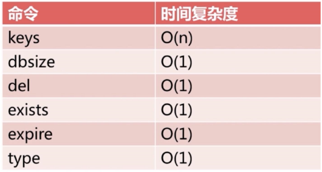
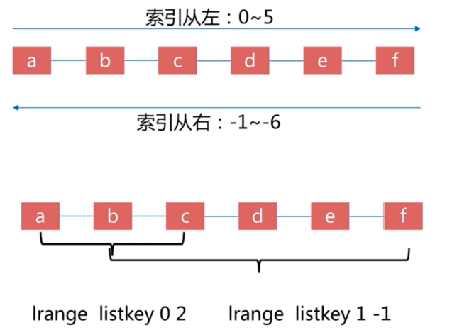
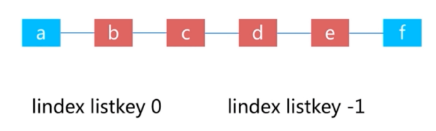
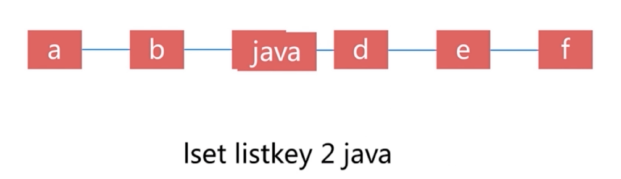

...省略...
To free pagecache, use:
echo 1 > /proc/sys/vm/drop_caches
To free dentries and inodes, use:
echo 2 > /proc/sys/vm/drop_caches
To free pagecache, dentries and inodes, use:
echo 3 > /proc/sys/vm/drop_caches
Because writing to this file is a nondestructive operation and dirty objects
are not freeable, the user should run sync(1) first.
范例：清理缓存
[root@centos8 ~]#cat /proc/sys/vm/drop_caches
0
[root@centos8 ~]#free -h
total used free shared buff/cache available
Mem: 798Mi 198Mi 60Mi 0.0Ki 538Mi 468Mi
Swap: 2.0Gi 9.0Mi 2.0Gi
[root@centos8 ~]#echo 3 > /proc/sys/vm/drop_caches
[root@centos8 ~]#free -h
total used free shared buff/cache available
Mem: 798Mi 247Mi 408Mi 1.0Mi 142Mi 426Mi
Swap: 2.0Gi 9.0Mi 2.0Gi
#CentOS 8 由系统源提供
[root@centos8 ~]#yum info redis
Installed Packages
Name : redis
Version : 5.0.3
Release : 1.module_el8.0.0+6+ab019c03
Arch : x86_64
Size : 3.3 M
Source : redis-5.0.3-1.module_el8.0.0+6+ab019c03.src.rpm
Repo : @System
From repo : AppStream
Summary : A persistent key-value database
URL : http://redis.io
License : BSD and MIT
Description : Redis is an advanced key-value store. It is often referred to as a data
: structure server since keys can contain strings, hashes, lists, sets and
: sorted sets.
:
: You can run atomic operations on these types, like appending to a string;
: incrementing the value in a hash; pushing to a list; computing set
: intersection, union and difference; or getting the member with highest
: ranking in a sorted set.
:
: In order to achieve its outstanding performance, Redis works with an
: in-memory dataset. Depending on your use case, you can persist it either
: by dumping the dataset to disk every once in a while, or by appending
: each command to a log.
:
: Redis also supports trivial-to-setup master-slave replication, with very
: fast non-blocking first synchronization, auto-reconnection on net split
: and so forth.
:
: Other features include Transactions, Pub/Sub, Lua scripting, Keys with a
: limited time-to-live, and configuration settings to make Redis behave like
: a cache.
:
: You can use Redis from most programming languages also.
#CentOS 7 由epel源提供
[root@node7 ~]# yum info redis
Loaded plugins: fastestmirror
Loading mirror speeds from cached hostfile
* base: mirrors.aliyun.com
* epel: mirrors.aliyun.com
* extras: mirrors.aliyun.com
Available Packages
Name : redis
Arch : x86_64
Version : 3.2.12
Release : 2.el7
Size : 544 k
Repo : epel/7/x86_64
Summary : A persistent key-value database
URL : http://redis.io
License : BSD
Description : Redis is an advanced key-value store. It is often referred to as a data
: structure server since keys can contain strings, hashes, lists, sets and
: sorted sets.
:
: You can run atomic operations on these types, like appending to a string;
: incrementing the value in a hash; pushing to a list; computing set
: intersection, union and difference; or getting the member with highest
: ranking in a sorted set.
:
: In order to achieve its outstanding performance, Redis works with an
: in-memory dataset. Depending on your use case, you can persist it either
: by dumping the dataset to disk every once in a while, or by appending
: each command to a log.
:
: Redis also supports trivial-to-setup master-slave replication, with very
: fast non-blocking first synchronization, auto-reconnection on net split
: and so forth.
:
: Other features include Transactions, Pub/Sub, Lua scripting, Keys with a
: limited time-to-live, and configuration settings to make Redis behave like
: a cache.
:
: You can use Redis from most programming languages also.
[root@centos8 ~]#redis-server --help
Usage: ./redis-server [/path/to/redis.conf] [options]
./redis-server - (read config from stdin)
./redis-server -v or --version
./redis-server -h or --help
./redis-server --test-memory <megabytes>
Examples:
./redis-server (run the server with default conf)
./redis-server /etc/redis/6379.conf
./redis-server --port 7777
./redis-server --port 7777 --replicaof 127.0.0.1 8888
./redis-server /etc/myredis.conf --loglevel verbose
Sentinel mode:
./redis-server /etc/sentinel.conf --sentinel
前台启动 redis
[root@centos8 ~]#redis-server /apps/redis/etc/redis.conf
16418:C 22 Oct 2020 10:43:29.813 # oO0OoO0OoO0Oo Redis is starting oO0OoO0OoO0Oo
16418:C 22 Oct 2020 10:43:29.813 # Redis version=5.0.9, bits=64, commit=00000000, modified=0, pid=16418, just started
16418:C 22 Oct 2020 10:43:29.813 # Configuration loaded
16418:M 22 Oct 2020 10:43:29.814 * Increased maximum number of open files to 10032 (it was originally set to 1024).
_._
_.-``__ ''-._
_.-`` `. `_. ''-._ Redis 5.0.9 (00000000/0) 64 bit
.-`` .-```. ```\/ _.,_ ''-._
( ' , .-` | `, ) Running in standalone mode
|`-._`-...-` __...-.``-._|'` _.-'| Port: 6379
| `-._ `._ / _.-' | PID: 16418
`-._ `-._ `-./ _.-' _.-'
|`-._`-._ `-.__.-' _.-'_.-'|
| `-._`-._ _.-'_.-' | http://redis.io
`-._ `-._`-.__.-'_.-' _.-'
|`-._`-._ `-.__.-' _.-'_.-'|
| `-._`-._ _.-'_.-' |
`-._ `-._`-.__.-'_.-' _.-'
`-._ `-.__.-' _.-'
`-._ _.-'
`-.__.-'
16418:M 22 Oct 2020 10:43:29.815 # WARNING: The TCP backlog setting of 511 cannot be enforced because /proc/sys/net/core/somaxconn is set to the lower value of 128.
16418:M 22 Oct 2020 10:43:29.815 # Server initialized
16418:M 22 Oct 2020 10:43:29.815 # WARNING overcommit_memory is set to 0! Background save may fail under low memory condition. To fix this issue add 'vm.overcommit_memory = 1' to /etc/sysctl.conf and then reboot or run the command 'sysctl vm.overcommit_memory=1' for this to take effect.
16418:M 22 Oct 2020 10:43:29.815 # WARNING you have Transparent Huge Pages (THP) support enabled in your kernel. This will create latency and memory usage issues with Redis. To fix this issue run the command 'echo madvise > /sys/kernel/mm/transparent_hugepage/enabled' as root, and add it to your /etc/rc.local in order to retain the setting after a reboot. Redis must be restarted after THP is disabled (set to 'madvise' or 'never').
16418:M 22 Oct 2020 10:43:29.815 * Loading RDB produced by version 6.0.8
16418:M 22 Oct 2020 10:43:29.815 * RDB age 603 seconds
16418:M 22 Oct 2020 10:43:29.815 * RDB memory usage when created 0.77 Mb
16418:M 22 Oct 2020 10:43:29.815 * DB loaded from disk: 0.000 seconds
16418:M 22 Oct 2020 10:43:29.815 * Ready to accept connections
[root@centos8 ~]#ss -ntl
State Recv-Q Send-Q Local Address:Port Peer Address:Port
LISTEN 0 128 0.0.0.0:22 0.0.0.0:*
LISTEN 0 128 127.0.0.1:6379 0.0.0.0:*
LISTEN 0 128 [::]:22 [::]:*
范例：开启多实例
#安装依赖包
[root@centos8 ~]#yum -y install make gcc tcl
#下载源码包
[root@centos8 ~]#wget http://download.redis.io/releases/redis-5.0.9.tar.gz
[root@centos8 ~]#tar xf redis-5.0.9.tar.gz
#编译安装
[root@centos8 ~]#cd redis-5.0.9/
[root@centos8 redis-5.0.9]#cd deps
[root@centos8 deps]#make hiredis lua jemalloc linenoise
[root@centos8 deps]#cd ../src
[root@centos8 src]#make
[root@centos8 src]#make PREFIX=/apps/redis/6379 install
配置变量
[root@centos8 src]#echo "PATH=/apps/redis/6379/bin:$PATH" > /etc/profile.d/redis.sh
[root@centos8 src]#. /etc/profile.d/redis.sh
#目录结构
[root@centos8 src]#tree /apps/redis/6379
/apps/redis/
└── bin
├── redis-benchmark
├── redis-check-aof
├── redis-check-rdb
├── redis-cli
├── redis-sentinel -> redis-server
└── redis-server
1 directory, 6 files
#准备相关目录和文件
[root@centos8 ~]#mkdir /apps/redis/6379/{etc,log,data,run}
[root@centos8 ~]#cp redis-5.0.9/redis.conf /apps/redis/6379/etc/
#前台启动redis 6379
[root@centos8 redis]#redis-server --port 6379
17024:C 22 Oct 2020 11:09:08.749 # oO0OoO0OoO0Oo Redis is starting oO0OoO0OoO0Oo
17024:C 22 Oct 2020 11:09:08.749 # Redis version=5.0.9, bits=64, commit=00000000, modified=0, pid=17024, just started
17024:C 22 Oct 2020 11:09:08.749 # Configuration loaded
17024:M 22 Oct 2020 11:09:08.750 * Increased maximum number of open files to 10032 (it was originally set to 1024).
_._
_.-``__ ''-._
_.-`` `. `_. ''-._ Redis 5.0.9 (00000000/0) 64 bit
.-`` .-```. ```\/ _.,_ ''-._
( ' , .-` | `, ) Running in standalone mode
|`-._`-...-` __...-.``-._|'` _.-'| Port: 6379
| `-._ `._ / _.-' | PID: 17024
`-._ `-._ `-./ _.-' _.-'
|`-._`-._ `-.__.-' _.-'_.-'|
| `-._`-._ _.-'_.-' | http://redis.io
`-._ `-._`-.__.-'_.-' _.-'
|`-._`-._ `-.__.-' _.-'_.-'|
| `-._`-._ _.-'_.-' |
`-._ `-._`-.__.-'_.-' _.-'
`-._ `-.__.-' _.-'
`-._ _.-'
`-.__.-'
17024:M 22 Oct 2020 11:09:08.751 # WARNING: The TCP backlog setting of 511 cannot be enforced because /proc/sys/net/core/somaxconn is set to the lower value of 128.
17024:M 22 Oct 2020 11:09:08.751 # Server initialized
17024:M 22 Oct 2020 11:09:08.751 # WARNING overcommit_memory is set to 0! Background save may fail under low memory condition. To fix this issue add 'vm.overcommit_memory = 1' to /etc/sysctl.conf and then reboot or run the command 'sysctl vm.overcommit_memory=1' for this to take effect.
17024:M 22 Oct 2020 11:09:08.751 # WARNING you have Transparent Huge Pages (THP) support enabled in your kernel. This will create latency and memory usage issues with Redis. To fix this issue run the command 'echo madvise > /sys/kernel/mm/transparent_hugepage/enabled' as root, and add it to your /etc/rc.local in order to retain the setting after a reboot. Redis must be restarted after THP is disabled (set to 'madvise' or 'never').
17024:M 22 Oct 2020 11:09:08.751 * Ready to accept connections
[root@centos8 ~]#ss -ntl
State Recv-Q Send-Q Local Address:Port Peer Address:Port
LISTEN 0 128 0.0.0.0:22 0.0.0.0:*
LISTEN 0 128 0.0.0.0:6379 0.0.0.0:*
LISTEN 0 128 [::]:22 [::]:*
LISTEN 0 128 [::]:6379 [::]:*
[root@centos8 ~]#redis-cli -p 6379
127.0.0.1:6379>
#为6380准备相关目录和文件
[root@centos8 ~]#mkdir /apps/redis/6380
[root@centos8 ~]#cp -ar /apps/redis/6379/* /apps/redis/6380/
[root@centos8 ~]#tree -d /apps/redis/
/apps/redis/
├── 6379
│ ├── bin
│ ├── data
│ ├── etc
│ ├── log
│ └── run
└── 6380
├── bin
├── data
├── etc
├── log
└── run
12 directories
[root@centos8 ~]#vim /apps/redis/6380/etc/redis.conf
port 6380
#前端启动6380
[root@centos8 ~]#redis-server --port 6380
17191:C 22 Oct 2020 11:17:28.354 # oO0OoO0OoO0Oo Redis is starting oO0OoO0OoO0Oo
17191:C 22 Oct 2020 11:17:28.354 # Redis version=5.0.9, bits=64, commit=00000000, modified=0, pid=17191, just started
17191:C 22 Oct 2020 11:17:28.354 # Configuration loaded
17191:M 22 Oct 2020 11:17:28.355 * Increased maximum number of open files to 10032 (it was originally set to 1024).
_._
_.-``__ ''-._
_.-`` `. `_. ''-._ Redis 5.0.9 (00000000/0) 64 bit
.-`` .-```. ```\/ _.,_ ''-._
( ' , .-` | `, ) Running in standalone mode
|`-._`-...-` __...-.``-._|'` _.-'| Port: 6380
| `-._ `._ / _.-' | PID: 17191
`-._ `-._ `-./ _.-' _.-'
|`-._`-._ `-.__.-' _.-'_.-'|
| `-._`-._ _.-'_.-' | http://redis.io
`-._ `-._`-.__.-'_.-' _.-'
|`-._`-._ `-.__.-' _.-'_.-'|
| `-._`-._ _.-'_.-' |
`-._ `-._`-.__.-'_.-' _.-'
`-._ `-.__.-' _.-'
`-._ _.-'
`-.__.-'
17191:M 22 Oct 2020 11:17:28.355 # WARNING: The TCP backlog setting of 511 cannot be enforced because /proc/sys/net/core/somaxconn is set to the lower value of 128.
17191:M 22 Oct 2020 11:17:28.355 # Server initialized
17191:M 22 Oct 2020 11:17:28.355 # WARNING overcommit_memory is set to 0! Background save may fail under low memory condition. To fix this issue add 'vm.overcommit_memory = 1' to /etc/sysctl.conf and then reboot or run the command 'sysctl vm.overcommit_memory=1' for this to take effect.
17191:M 22 Oct 2020 11:17:28.355 # WARNING you have Transparent Huge Pages (THP) support enabled in your kernel. This will create latency and memory usage issues with Redis. To fix this issue run the command 'echo madvise > /sys/kernel/mm/transparent_hugepage/enabled' as root, and add it to your /etc/rc.local in order to retain the setting after a reboot. Redis must be restarted after THP is disabled (set to 'madvise' or 'never').
17191:M 22 Oct 2020 11:17:28.355 * Loading RDB produced by version 6.0.8
17191:M 22 Oct 2020 11:17:28.355 * RDB age 1726 seconds
17191:M 22 Oct 2020 11:17:28.356 * RDB memory usage when created 0.77 Mb
17191:M 22 Oct 2020 11:17:28.356 * DB loaded from disk: 0.000 seconds
17191:M 22 Oct 2020 11:17:28.356 * Ready to accept connections
[root@centos8 ~]#ss -ntl
State Recv-Q Send-Q Local Address:Port Peer Address:Port
LISTEN 0 128 0.0.0.0:22 0.0.0.0:*
LISTEN 0 128 0.0.0.0:6379 0.0.0.0:*
LISTEN 0 128 0.0.0.0:6380 0.0.0.0:*
LISTEN 0 128 [::]:22 [::]:*
LISTEN 0 128 [::]:6379 [::]:*
LISTEN 0 128 [::]:6380 [::]:*
[root@centos8 ~]#redis-cli -p 6380
127.0.0.1:6380>
解决启动时的三个警告提示
tcp-backlog
警告提示如下：
17191:M 22 Oct 2020 11:17:28.355 # WARNING: The TCP backlog setting of 511 cannot be enforced because /proc/sys/net/core/somaxconn is set to the lower value of 128.
17191:M 22 Oct 2020 11:17:28.355 # WARNING overcommit_memory is set to 0! Background save may fail under low memory condition. To fix this issue add 'vm.overcommit_memory = 1' to /etc/sysctl.conf and then reboot or run the command 'sysctl vm.overcommit_memory=1' for this to take effect.
17191:M 22 Oct 2020 11:17:28.355 # WARNING you have Transparent Huge Pages (THP) support enabled in your kernel. This will create latency and memory usage issues with Redis. To fix this issue run the command 'echo madvise > /sys/kernel/mm/transparent_hugepage/enabled' as root, and add it to your /etc/rc.local in order to retain the setting after a reboot. Redis must be restarted after THP is disabled (set to 'madvise' or 'never').
警告：您在内核中启用了透明大页面（THP,不同于一般内存页的4k为2M）支持。 这将在Redis中造成延迟和内存使用问题。 要解决此问题，请以root 用户身份运行命令“echo never> /sys/kernel/mm/transparent_hugepage/enabled”，并将其添加到您的/etc/rc.local中，以便在重启后保留设置。禁用THP后，必须重新启动Redis。
解决方法：
[root@centos8 ~]#echo never > /sys/kernel/mm/transparent_hugepage/enabled
[root@centos8 ~]#echo "echo never > /sys/kernel/mm/transparent_hugepage/enabled" >> /etc/rc.d/rc.local [root@centos8 ~]#cat /etc/rc.d/rc.local
#!/bin/bash
# THIS FILE IS ADDED FOR COMPATIBILITY PURPOSES
#
# It is highly advisable to create own systemd services or udev rules
# to run scripts during boot instead of using this file.
#
# In contrast to previous versions due to parallel execution during boot
# this script will NOT be run after all other services.
#
# Please note that you must run 'chmod +x /etc/rc.d/rc.local' to ensure
# that this script will be executed during boot.
touch /var/lock/subsys/local
echo never > /sys/kernel/mm/transparent_hugepage/enabled
[root@centos8 ~]#chmod +x /etc/rc.d/rc.local
再次前端启动 redis
建议在其它redis服务器上做以上配置
[root@centos8 ~]#redis-server --port 6379
17436:C 22 Oct 2020 11:46:17.793 # oO0OoO0OoO0Oo Redis is starting oO0OoO0OoO0Oo
17436:C 22 Oct 2020 11:46:17.793 # Redis version=5.0.9, bits=64, commit=00000000, modified=0, pid=17436, just started
17436:C 22 Oct 2020 11:46:17.793 # Configuration loaded
17436:M 22 Oct 2020 11:46:17.794 * Increased maximum number of open files to 10032 (it was originally set to 1024).
_._
_.-``__ ''-._
_.-`` `. `_. ''-._ Redis 5.0.9 (00000000/0) 64 bit
.-`` .-```. ```\/ _.,_ ''-._
( ' , .-` | `, ) Running in standalone mode
|`-._`-...-` __...-.``-._|'` _.-'| Port: 6380
| `-._ `._ / _.-' | PID: 17436
`-._ `-._ `-./ _.-' _.-'
|`-._`-._ `-.__.-' _.-'_.-'|
| `-._`-._ _.-'_.-' | http://redis.io
`-._ `-._`-.__.-'_.-' _.-'
|`-._`-._ `-.__.-' _.-'_.-'|
| `-._`-._ _.-'_.-' |
`-._ `-._`-.__.-'_.-' _.-'
`-._ `-.__.-' _.-'
`-._ _.-'
`-.__.-'
17436:M 22 Oct 2020 11:46:17.795 # Server initialized
17436:M 22 Oct 2020 11:46:17.795 * Loading RDB produced by version 6.0.8
17436:M 22 Oct 2020 11:46:17.795 * RDB age 3455 seconds
17436:M 22 Oct 2020 11:46:17.795 * RDB memory usage when created 0.77 Mb
17436:M 22 Oct 2020 11:46:17.795 * DB loaded from disk: 0.000 seconds
17436:M 22 Oct 2020 11:46:17.795 * Ready to accept connections
[root@centos8 ~]#yum info python3-redis
Last metadata expiration check: 0:21:56 ago on Thu 22 Oct 2020 03:38:53 PM CST.
Available Packages
Name : python3-redis
Version : 3.3.8
Release : 1.el8
Arch : noarch
Size : 131 k
Source : python-redis-3.3.8-1.el8.src.rpm
Repo : epel
Summary : Python 3 interface to the Redis key-value store
URL : https://github.com/andymccurdy/redis-py
License : MIT
Description : This is a Python 3 interface to the Redis key-value store.
[root@centos8 ~]#yum -y install python3 python3-redis
#注意文件名不要为redis,会和redis模块名称冲突
[root@centos8 ~]#cat redis_test.py
#!/bin/env python3
import redis
#import time
pool = redis.ConnectionPool(host="127.0.0.1",port=6379,password="centos")
r = redis.Redis(connection_pool=pool)
for i in range(100):
r.set("k%d" % i,"v%d" % i)
# time.sleep(1)
data=r.get("k%d" % i)
print(data)
[root@centos8 ~]#python3 redis_test.py
...省略...
b'v93'
b'v94'
b'v95'
b'v96'
b'v97'
b'v98'
b'v99'
[root@centos8 ~]#redis-cli -a centos --no-auth-warning
127.0.0.1:6379> get k88
"v88"
127.0.0.1:6379>
CONFIG SET parameter value
时间复杂度：O(1)
CONFIG SET 命令可以动态地调整 Redis 服务器的配置(configuration)而无须重启。
你可以使用它修改配置参数，或者改变 Redis 的持久化(Persistence)方式。
CONFIG SET 可以修改的配置参数可以使用命令 CONFIG GET * 来列出，所有被 CONFIG SET 修改的配置参数都会立即生效。
CONFIG GET parameter
时间复杂度： O(N)，其中 N 为命令返回的配置选项数量。
CONFIG GET 命令用于取得运行中的 Redis 服务器的配置参数(configuration parameters)，在Redis 2.4 版本中， 有部分参数没有办法用 CONFIG GET 访问，但是在最新的 Redis 2.6 版本中，所有配置参数都已经可以用 CONFIG GET 访问了。
CONFIG GET 接受单个参数 parameter 作为搜索关键字，查找所有匹配的配置参数，其中参数和值以“键-值对”(key-value pairs)的方式排列。
比如执行 CONFIG GET s* 命令，服务器就会返回所有以 s 开头的配置参数及参数的值
设置连接密码
#设置连接密码
127.0.0.1:6379> CONFIG SET requirepass centos
OK
#查看连接密码
127.0.0.1:6379> CONFIG GET requirepass
1) "requirepass"
2) "centos"
save 900 1
save 300 10
save 60 10000
stop-writes-on-bgsave-error yes
rdbcompression yes
rdbchecksum yes
dbfilename dump.rdb
dir /var/lib/redis #编译安装，默认RDB文件存放在启动redis的工作目录，建议明确指定存入目录
127.0.0.1:6379> INFO
# Server
redis_version:5.0.9
redis_git_sha1:00000000
redis_git_dirty:0
redis_build_id:572b40848ddebfec
redis_mode:standalone
os:Linux 4.18.0-80.el8.x86_64 x86_64
arch_bits:64
multiplexing_api:epoll
atomicvar_api:atomic-builtin
...省略...
SELECT
切换数据库，相当于在MySQL的 USE DBNAME 指令
[root@centos8 ~]#redis-cli -a centos --no-auth-warning
127.0.0.1:6379> info cluster
# Cluster
cluster_enabled:0
127.0.0.1:6379> SELECT 0
OK
127.0.0.1:6379> SELECT 15
OK
127.0.0.1:6379[15]> SELECT 16
(error) ERR DB index is out of range
127.0.0.1:6379[15]>
注意: 在 redis cluster 模式下不支持多个数据库,会出现下面错误
[root@centos8 ~]#redis-cli
127.0.0.1:6379> info cluster
# Cluster
cluster_enabled:1
127.0.0.1:6379> select 0
OK
127.0.0.1:6379> select 1
(error) ERR SELECT is not allowed in cluster mode
KEYS
查看当前库下的所有key，此命令慎用！

127.0.0.1:6379[1]> SELECT 0
OK
127.0.0.1:6379> KEYS * #匹配数据库内所有key
1) "port1"
2) "name"
3) "port2"
4) "port"
127.0.0.1:6379> SELECT 1
OK
127.0.0.1:6379[1]> KEYS *
(empty list or set)
127.0.0.1:6379[1]>
127.0.0.1:6379> SELECT 1
OK
#一次设置4个key
127.0.0.1:6379[1]> MSET one 1 two 2 three 3 four 4
OK
127.0.0.1:6379[1]> KEYS *o*
1) "two"
2) "one"
3) "four"
BGSAVE
手动在后台执行RDB持久化操作
#交互式执行
127.0.0.1:6379[1]> BGSAVE
Background saving started
[root@centos8 ~]#ll /apps/redis/data/
total 664
-rw-r--r-- 1 redis redis 204 Oct 22 21:30 dump_6379.rdb
#非交互式执行
[root@centos8 ~]#redis-cli -a centos --no-auth-warning bgsave
Background saving started
[root@centos8 ~]#ll /apps/redis/data/
total 664
-rw-r--r-- 1 redis redis 204 Oct 22 21:32 dump_6379.rdb
DBSIZE
返回当前库下的所有key 数量
127.0.0.1:6379> DBSIZE
(integer) 8
127.0.0.1:6379> SELECT 1
OK
127.0.0.1:6379[1]> DBSIZE
(integer) 4
127.0.0.1:6379[1]> SELECT 2
OK
127.0.0.1:6379[2]> DBSIZE
(integer) 0
FLUSHDB
强制清空当前库中的所有key，此命令慎用！
127.0.0.1:6379[2]> SELECT 1
OK
127.0.0.1:6379[1]> DBSIZE
(integer) 4
127.0.0.1:6379[1]> FLUSHDB
OK
127.0.0.1:6379[1]> DBSIZE
(integer) 0
FLUSHALL
强制清空当前redis服务器所有数据库中的所有key，即删除所有数据，此命令慎用！
127.0.0.1:6379> FLUSHALL
OK
#生产建议修改配置 /etc/redis.conf，禁用或改为别名
rename-command FLUSHALL ""
SET key value [EX seconds] [PX milliseconds] [NX|XX]
时间复杂度： O(1)
将字符串值 value 关联到 key 。
如果 key 已经持有其他值， SET 就覆写旧值， 无视类型。
当 SET 命令对一个带有生存时间（TTL）的键进行设置之后， 该键原有的 TTL 将被清除。
从 Redis 2.6.12 版本开始， SET 命令的行为可以通过一系列参数来修改：
EX seconds ： 将键的过期时间设置为 seconds 秒。 执行 SET key value EX seconds 的效果等同于执行 SETEX key seconds value 。
PX milliseconds ： 将键的过期时间设置为 milliseconds 毫秒。 执行 SET key value PX milliseconds 的效果等同于执行 PSETEX key milliseconds value 。
NX ： 只在键不存在时， 才对键进行设置操作。 执行 SET key value NX 的效果等同于执行 SETNX key value 。
XX ： 只在键已经存在时， 才对键进行设置操作。
范例：
127.0.0.1:6379> set key1 value1
OK
127.0.0.1:6379> get key1
"value1"
127.0.0.1:6379> type key1
string
127.0.0.1:6379> set title ceo ex 5 #设置自动过期时间为5秒
OK
127.0.0.1:6379> get title
"ceo"
127.0.0.1:6379> get title
(nil)
#大小写敏感
127.0.0.1:6379> set NAME KOBE
OK
127.0.0.1:6379> get NAME
"KOBE"
127.0.0.1:6379> get name
(nil)
127.0.0.1:6379> set name brynat
OK
127.0.0.1:6379> get name
"brynat"
127.0.0.1:6379> get NAME
"KOBE"
#key不存在才设置，相当于add
127.0.0.1:6379> get name
"brynat"
127.0.0.1:6379> set name tao nx
(nil)
#key存在才设置，相当于update
127.0.0.1:6379> get name
"brynat"
127.0.0.1:6379> set name tao xx
OK
127.0.0.1:6379> get name
"tao"
127.0.0.1:6379> get age
(nil)
127.0.0.1:6379> set age 23 xx
(nil)
127.0.0.1:6379> get age
(nil)
获取一个key的内容
127.0.0.1:6379> get NAME
"KOBE"
127.0.0.1:6379> get name age
(error) ERR wrong number of arguments for 'get' command
删除一个和多个key
127.0.0.1:6379> del name
(integer) 1
127.0.0.1:6379> del age NAME
(integer) 2
127.0.0.1:6379> append k2 " append new value"
(integer) 19
127.0.0.1:6379> get k2
"v2 append new value"
设置新值并返回旧值
127.0.0.1:6379> set name kobe
OK
127.0.0.1:6379> getset name bryant
"kobe"
127.0.0.1:6379> get name
"bryant"
返回字符串 key 对应值的字节数
127.0.0.1:6379> set name kobe
OK
127.0.0.1:6379> STRLEN name #返回字节数
(integer) 4
127.0.0.1:6379> append name " bryant"
(integer) 11
127.0.0.1:6379> get name
"kobe bryant"
127.0.0.1:6379> STRLEN name
(integer) 11
127.0.0.1:6379> set name 好好学习
OK
127.0.0.1:6379> get name
"\xe5\xa5\xbd\xe5\xa5\xbd\xe5\xad\xa6\xe4\xb9\xa0"
127.0.0.1:6379> STRLEN name
(integer) 12
判断 key 是否存在
127.0.0.1:6379> set name kobe ex 5
OK
127.0.0.1:6379> exists name #返回值为1表示存在，0表示不存在
(integer) 1
127.0.0.1:6379> exists name
(integer) 0
127.0.0.1:6379> set name kobe ex 10
OK
127.0.0.1:6379> exists name age
(integer) 2
查看 key 的过期时间
ttl key #查看key的剩余生存时间,如果key过期后,会自动删除
-1 #返回值表示永不过期，默认创建的key是永不过期，重新对key赋值，也会从有剩余生命周期变成永不过期
-2 #返回值表示没有此key
num #key的剩余有效期
127.0.0.1:6379> TTL age
(integer) -1
127.0.0.1:6379> set name kobe ex 20
OK
127.0.0.1:6379> ttl name
(integer) 16
127.0.0.1:6379> ttl name
(integer) 14
127.0.0.1:6379> ttl name
(integer) -2
重新设置key的过期时间
127.0.0.1:6379> set name kobe ex 20
OK
127.0.0.1:6379> EXPIRE name 30
(integer) 1
127.0.0.1:6379> ttl name
(integer) 25
取消key的过期时间
即永不过期
127.0.0.1:6379> ttl name
(integer) 26
127.0.0.1:6379> PERSIST name
(integer) 1
127.0.0.1:6379> ttl name
(integer) -1
127.0.0.1:6379> set num 30
OK
127.0.0.1:6379> INCRBY num 20
(integer) 50
127.0.0.1:6379> get num
"50"
127.0.0.1:6379> INCRBY num -20
(integer) 30
127.0.0.1:6379> get num
"30"
127.0.0.1:6379> get num1
(nil)
127.0.0.1:6379> INCRBY num1 5
(integer) 5
127.0.0.1:6379> get num1
"5"
数据减少
decrby 可以减小数值(也可以增加)
127.0.0.1:6379> set num 30
OK
127.0.0.1:6379> DECRBY num 20
(integer) 10
127.0.0.1:6379> get num
"10"
127.0.0.1:6379> DECRBY num -20
(integer) 30
127.0.0.1:6379> get num
"30"
127.0.0.1:6379> get num1
(nil)
127.0.0.1:6379> DECRBY num1 10
(integer) -10
127.0.0.1:6379> get num1
"-10"
LPUSH key value [value …]
时间复杂度： O(1)
将一个或多个值 value 插入到列表 key 的表头
如果有多个 value 值，那么各个 value 值按从左到右的顺序依次插入到表头： 比如说，对空列表mylist 执行命令 LPUSH mylist a b c ，列表的值将是 c b a ，这等同于原子性地执行 LPUSH
mylist a 、 LPUSH mylist b 和 LPUSH mylist c 三个命令。
如果 key 不存在，一个空列表会被创建并执行 LPUSH 操作。
当 key 存在但不是列表类型时，返回一个错误。
RPUSH key value [value …]
时间复杂度： O(1)
将一个或多个值 value 插入到列表 key 的表尾(最右边)。
如果有多个 value 值，那么各个 value 值按从左到右的顺序依次插入到表尾：比如对一个空列表mylist 执行 RPUSH mylist a b c ，得出的结果列表为 a b c ，等同于执行命令 RPUSH mylist
a 、 RPUSH mylist b 、 RPUSH mylist c 。
如果 key 不存在，一个空列表会被创建并执行 RPUSH 操作。
当 key 存在但不是列表类型时，返回一个错误。
范例:
#从左边添加数据，已添加的需向右移
127.0.0.1:6379> LPUSH name kobe bryant rose #根据顺序逐个写入name，最后的rose会在列表的最右侧
(integer) 3
127.0.0.1:6379> TYPE name
list
#从右边添加数据
127.0.0.1:6379> RPUSH course linux python go
(integer) 3
127.0.0.1:6379> TYPE course
list
向列表追加数据
127.0.0.1:6379> LPUSH name bob
(integer) 4
#从右边添加数据，已添加的向左移
127.0.0.1:6379> RPUSH name tom
(integer) 5
获取列表长度(元素个数)
127.0.0.1:6379> LLEN name
(integer) 5
127.0.0.1:6379> LLEN course
(integer) 3
获取列表指定位置数据


127.0.0.1:6379> LPUSH list1 a b c d
(integer) 4
127.0.0.1:6379> LINDEX list1 0 #获取0编号的元素
"d"
127.0.0.1:6379> LINDEX list1 3 #获取3编号的元素
"a"
127.0.0.1:6379> LINDEX list1 -1 #获取最后一个的元素
"a"
#元素从0开始编号
127.0.0.1:6379> LPUSH list1 a b c d
(integer) 4
127.0.0.1:6379> LRANGE list1 1 2
1) "c"
2) "b"
127.0.0.1:6379> LRANGE list1 0 3 #所有元素
1) "d"
2) "c"
3) "b"
4) "a"
127.0.0.1:6379> LRANGE list1 0 -1 #所有元素
1) "d"
2) "c"
3) "b"
4) "a"
127.0.0.1:6379> RPUSH list2 zhang wang li zhao
(integer) 4
127.0.0.1:6379> LRANGE list2 1 2 #指定范围
1) "wang"
2) "li"
127.0.0.1:6379> LRANGE list2 2 2 #指定位置
1) "li"
127.0.0.1:6379> LRANGE list2 0 -1 #所有元素
1) "zhang"
2) "wang"
3) "li"
4) "zhao"
修改列表指定索引值

127.0.0.1:6379> RPUSH listkey a b c d e f
(integer) 6
127.0.0.1:6379> lrange listkey 0 -1
1) "a"
2) "b"
3) "c"
4) "d"
5) "e"
6) "f"
127.0.0.1:6379> lset listkey 2 java
OK
127.0.0.1:6379> lrange listkey 0 -1
1) "a"
2) "b"
3) "java"
4) "d"
5) "e"
6) "f"
127.0.0.1:6379>
REPLICAOF MASTER_IP PORT 指令可以启用主从同步复制功能,早期版本使用
SLAVEOF 指令
127.0.0.1:6379> REPLICAOF MASTER_IP PORT
127.0.0.1:6379> CONFIG SET masterauth <masterpass>
在master上设置key1
[root@master ~]#redis-cli -a centos
Warning: Using a password with '-a' or '-u' option on the command line interface may not be safe.
127.0.0.1:6379> info replication
# Replication
role:master
connected_slaves:0
master_replid:2e389b425e8475b5e117053d91331c3e0692f64a
master_replid2:0000000000000000000000000000000000000000
master_repl_offset:0
second_repl_offset:-1
repl_backlog_active:0
repl_backlog_size:1048576
repl_backlog_first_byte_offset:0
repl_backlog_histlen:0
127.0.0.1:6379> set key1 v1-master
OK
127.0.0.1:6379> KEYS *
1) "key1"
127.0.0.1:6379> get key1
"v1-master"
#以下都在slave上执行，登录，设置key1
[root@slave1 ~]#redis-cli -a centos
Warning: Using a password with '-a' or '-u' option on the command line interface may not be safe.
127.0.0.1:6379> info replication #查看当前角色默认为master
# Replication
role:master
connected_slaves:0
master_replid:37583883b0a8c62bb8ee56d9ea720e286224f56d
master_replid2:0000000000000000000000000000000000000000
master_repl_offset:0
second_repl_offset:-1
repl_backlog_active:0
repl_backlog_size:1048576
repl_backlog_first_byte_offset:0
repl_backlog_histlen:0
127.0.0.1:6379> set key1 v1-slave1-18
OK
127.0.0.1:6379> keys *
1) "key1"
127.0.0.1:6379> get key1
"v1-slave1-18"
#在第二个slave2上，也设置相同的key1，但值不同
[root@slave2 ~]#redis-cli -a centos
Warning: Using a password with '-a' or '-u' option on the command line interface may not be safe.
127.0.0.1:6379> info replication
# Replication
role:master
connected_slaves:0
master_replid:437af181fb73ed38b3be9995c00d23012d196de6
master_replid2:0000000000000000000000000000000000000000
master_repl_offset:0
second_repl_offset:-1
repl_backlog_active:0
repl_backlog_size:1048576
repl_backlog_first_byte_offset:0
repl_backlog_histlen:0
127.0.0.1:6379> set key1 v1-slave2-28
OK
127.0.0.1:6379> keys *
1) "key1"
127.0.0.1:6379> get key1
"v1-slave2-28"
#在所有的slave上设置master的IP和端口，4.0版本之前的指令为slaveof
1)在slave1上
127.0.0.1:6379> replicaof 10.0.0.8 6379 #仍可使用SLAVEOF MasterIP Port
OK
#在slave上设置master的密码，才可以同步
127.0.0.1:6379> config set masterauth centos
OK
127.0.0.1:6379> info replication
# Replication
role:slave #角色变为slave
master_host:10.0.0.8 #指向master
master_port:6379
master_link_status:up
master_last_io_seconds_ago:4
master_sync_in_progress:0
slave_repl_offset:14
slave_priority:100
slave_read_only:1
connected_slaves:0
master_replid:f68659a5c6e8381dbbdd6841f5b89d1a60157af8
master_replid2:0000000000000000000000000000000000000000
master_repl_offset:14
second_repl_offset:-1
repl_backlog_active:1
repl_backlog_size:1048576
repl_backlog_first_byte_offset:1
repl_backlog_histlen:14
#查看数据是否同步成功
127.0.0.1:6379> get key1
"v1-master"
2)在slave2上
127.0.0.1:6379> replicaof 10.0.0.8 6379
OK
127.0.0.1:6379> config set masterauth centos
OK
127.0.0.1:6379> info replication
# Replication
role:slave
master_host:10.0.0.8
master_port:6379
master_link_status:up
master_last_io_seconds_ago:9
master_sync_in_progress:0
slave_repl_offset:560
slave_priority:100
slave_read_only:1
connected_slaves:0
master_replid:f68659a5c6e8381dbbdd6841f5b89d1a60157af8
master_replid2:0000000000000000000000000000000000000000
master_repl_offset:560
second_repl_offset:-1
repl_backlog_active:1
repl_backlog_size:1048576
repl_backlog_first_byte_offset:547
repl_backlog_histlen:14
127.0.0.1:6379> get key1
"v1-master"
#在master上可以看到所有slave的信息
127.0.0.1:6379> info replication
# Replication
role:master
connected_slaves:2
slave0:ip=10.0.0.18,port=6379,state=online,offset=672,lag=1
slave1:ip=10.0.0.28,port=6379,state=online,offset=672,lag=1
master_replid:f68659a5c6e8381dbbdd6841f5b89d1a60157af8
master_replid2:0000000000000000000000000000000000000000
master_repl_offset:672
second_repl_offset:-1
repl_backlog_active:1
repl_backlog_size:1048576
repl_backlog_first_byte_offset:1
repl_backlog_histlen:672
删除主从同步
REPLICAOF NO ONE 指令可以取消主从复制
#取消复制，在slave上执行REPLICAOF NO ONE，会断开和master的连接不再主从复制，但不会清除slave上已有的数据
1)在slave1上
127.0.0.1:6379> replicaof no one
OK
127.0.0.1:6379> info replication
# Replication
role:master #角色变回了master
connected_slaves:0
master_replid:9507932f3addde3a76b51c5d6ecbb5daac398caa
master_replid2:f68659a5c6e8381dbbdd6841f5b89d1a60157af8
master_repl_offset:1064
second_repl_offset:1065
repl_backlog_active:1
repl_backlog_size:1048576
repl_backlog_first_byte_offset:1
repl_backlog_histlen:1064
2)在master上
127.0.0.1:6379> info replication
# Replication
role:master
connected_slaves:1 slave数量减少
slave0:ip=10.0.0.28,port=6379,state=online,offset=1260,lag=0
master_replid:f68659a5c6e8381dbbdd6841f5b89d1a60157af8
master_replid2:0000000000000000000000000000000000000000
master_repl_offset:1260
second_repl_offset:-1
repl_backlog_active:1
repl_backlog_size:1048576
repl_backlog_first_byte_offset:1
repl_backlog_histlen:1260
同步日志
在 master 上观察日志
[root@master ~]#tail /var/log/redis/redis.log
2259:M 24 Oct 2020 12:19:25.773 * Synchronization with replica 10.0.0.18:6379 succeeded
2259:M 24 Oct 2020 12:25:57.637 * Replica 10.0.0.28:6379 asks for synchronization
2259:M 24 Oct 2020 12:25:57.637 * Full resync requested by replica 10.0.0.28:6379
2259:M 24 Oct 2020 12:25:57.637 * Starting BGSAVE for SYNC with target: disk
2259:M 24 Oct 2020 12:25:57.638 * Background saving started by pid 2379
2379:C 24 Oct 2020 12:25:57.639 * DB saved on disk
2379:C 24 Oct 2020 12:25:57.639 * RDB: 0 MB of memory used by copy-on-write
2259:M 24 Oct 2020 12:25:57.717 * Background saving terminated with success
2259:M 24 Oct 2020 12:25:57.718 * Synchronization with replica 10.0.0.28:6379 succeeded
2259:M 24 Oct 2020 12:32:10.884 # Connection with replica 10.0.0.18:6379 lost.
在 slave 节点观察日志
1)在slave2上
[root@slave2 ~]#tail /var/log/redis/redis.log
7318:S 24 Oct 2020 12:25:57.633 * Connecting to MASTER 10.0.0.8:6379
7318:S 24 Oct 2020 12:25:57.633 * MASTER <-> REPLICA sync started
7318:S 24 Oct 2020 12:25:57.634 * Non blocking connect for SYNC fired the event.
7318:S 24 Oct 2020 12:25:57.634 * Master replied to PING, replication can continue...
7318:S 24 Oct 2020 12:25:57.637 * Partial resynchronization not possible (no cached master)
7318:S 24 Oct 2020 12:25:57.638 * Full resync from master: f68659a5c6e8381dbbdd6841f5b89d1a60157af8:546
7318:S 24 Oct 2020 12:25:57.718 * MASTER <-> REPLICA sync: receiving 197 bytes from master
7318:S 24 Oct 2020 12:25:57.719 * MASTER <-> REPLICA sync: Flushing old data
7318:S 24 Oct 2020 12:25:57.719 * MASTER <-> REPLICA sync: Loading DB in memory
7318:S 24 Oct 2020 12:25:57.719 * MASTER <-> REPLICA sync: Finished with success
修改slave节点配置文件
范例:
1)在slave1上
[root@slave1 ~]#grep replicaof /etc/redis.conf
# Master-Replica replication. Use replicaof to make a Redis instance a copy of
# replicaof <masterip> <masterport>
[root@slave1 ~]#sed -ri "s/^# (replicaof).*/\1 10.0.0.8 6379/" /etc/redis.conf
[root@slave1 ~]#grep replicaof /etc/redis.conf
# Master-Replica replication. Use replicaof to make a Redis instance a copy of
replicaof 10.0.0.8 6379 #指定master的IP和端口号
[root@slave1 ~]#grep masterauth /etc/redis.conf
# masterauth <master-password>
[root@slave1 ~]#sed -ri "s/^# (masterauth).*/\1 centos/" /etc/redis.conf
[root@slave1 ~]#grep masterauth /etc/redis.conf
masterauth centos #设置密码
[root@slave1 ~]#systemctl restart redis
2)在slave2上
[root@slave2 ~]#grep replicaof /etc/redis.conf
# Master-Replica replication. Use replicaof to make a Redis instance a copy of
# replicaof <masterip> <masterport>
[root@slave2 ~]#sed -ri "s/^# (replicaof).*/\1 10.0.0.8 6379/" /etc/redis.conf
[root@slave2 ~]#grep replicaof /etc/redis.conf
# Master-Replica replication. Use replicaof to make a Redis instance a copy of
replicaof 10.0.0.8 6379
[root@slave2 ~]#grep masterauth /etc/redis.conf
# masterauth <master-password>
[root@slave2 ~]#sed -ri "s/^# (masterauth).*/\1 centos/" /etc/redis.conf
[root@slave2 ~]#grep masterauth /etc/redis.conf
masterauth centos
[root@slave2 ~]#systemctl restart redis
#以slave1为例
7530:S 24 Oct 2020 12:46:47.815 * Connecting to MASTER 10.0.0.8:6379
7530:S 24 Oct 2020 12:46:47.816 * MASTER <-> REPLICA sync started
7530:S 24 Oct 2020 12:46:47.816 * Non blocking connect for SYNC fired the event.
7530:S 24 Oct 2020 12:46:47.831 * Master replied to PING, replication can continue...
7530:S 24 Oct 2020 12:46:47.832 * Trying a partial resynchronization (request 9507932f3addde3a76b51c5d6ecbb5daac398caa:1065).
7530:S 24 Oct 2020 12:46:47.848 * Full resync from master: f68659a5c6e8381dbbdd6841f5b89d1a60157af8:2282
7530:S 24 Oct 2020 12:46:47.848 * Discarding previously cached master state.
7530:S 24 Oct 2020 12:46:47.897 * MASTER <-> REPLICA sync: receiving 197 bytes from master
7530:S 24 Oct 2020 12:46:47.898 * MASTER <-> REPLICA sync: Flushing old data
7530:S 24 Oct 2020 12:46:47.898 * MASTER <-> REPLICA sync: Loading DB in memory
7530:S 24 Oct 2020 12:46:47.898 * MASTER <-> REPLICA sync: Finished with success
7530:S 24 Oct 2020 12:54:37.563 # Connection with master lost.
7530:S 24 Oct 2020 12:54:37.563 * Caching the disconnected master state.
7530:S 24 Oct 2020 12:54:38.117 * Connecting to MASTER 10.0.0.8:6379
7530:S 24 Oct 2020 12:54:38.118 * MASTER <-> REPLICA sync started
7530:S 24 Oct 2020 12:54:38.118 # Error condition on socket for SYNC: Connection refused
Master日志
[root@master ~]#tail -f /var/log/redis/redis.log
2259:M 24 Oct 2020 11:48:48.987 * DB loaded from disk: 0.000 seconds
2259:M 24 Oct 2020 11:48:48.987 * Ready to accept connections
2259:M 24 Oct 2020 12:19:25.718 * Replica 10.0.0.18:6379 asks for synchronization
2259:M 24 Oct 2020 12:19:25.719 * Full resync requested by replica 10.0.0.18:6379
2259:M 24 Oct 2020 12:19:25.719 * Starting BGSAVE for SYNC with target: disk
2259:M 24 Oct 2020 12:19:25.719 * Background saving started by pid 2366
2366:C 24 Oct 2020 12:19:25.721 * DB saved on disk
2366:C 24 Oct 2020 12:19:25.721 * RDB: 0 MB of memory used by copy-on-write
2259:M 24 Oct 2020 12:19:25.772 * Background saving terminated with success
2259:M 24 Oct 2020 12:19:25.773 * Synchronization with replica 10.0.0.18:6379 succeeded
2259:M 24 Oct 2020 12:25:57.637 * Replica 10.0.0.28:6379 asks for synchronization
2259:M 24 Oct 2020 12:25:57.637 * Full resync requested by replica 10.0.0.28:6379
2259:M 24 Oct 2020 12:25:57.637 * Starting BGSAVE for SYNC with target: disk
2259:M 24 Oct 2020 12:25:57.638 * Background saving started by pid 2379
2379:C 24 Oct 2020 12:25:57.639 * DB saved on disk
2379:C 24 Oct 2020 12:25:57.639 * RDB: 0 MB of memory used by copy-on-write
2259:M 24 Oct 2020 12:25:57.717 * Background saving terminated with success
2259:M 24 Oct 2020 12:25:57.718 * Synchronization with replica 10.0.0.28:6379 succeeded
2259:M 24 Oct 2020 12:32:10.884 # Connection with replica 10.0.0.18:6379 lost.
2259:M 24 Oct 2020 12:46:47.832 * Replica 10.0.0.18:6379 asks for synchronization
2259:M 24 Oct 2020 12:46:47.833 * Partial resynchronization not accepted: Replication ID mismatch (Replica asked for '9507932f3addde3a76b51c5d6ecbb5daac398caa', my replication IDs are 'f68659a5c6e8381dbbdd6841f5b89d1a60157af8' and '0000000000000000000000000000000000000000')
2259:M 24 Oct 2020 12:46:47.833 * Starting BGSAVE for SYNC with target: disk
2259:M 24 Oct 2020 12:46:47.847 * Background saving started by pid 2466
2466:C 24 Oct 2020 12:46:47.850 * DB saved on disk
2466:C 24 Oct 2020 12:46:47.850 * RDB: 0 MB of memory used by copy-on-write
2259:M 24 Oct 2020 12:46:47.897 * Background saving terminated with success
2259:M 24 Oct 2020 12:46:47.897 * Synchronization with replica 10.0.0.18:6379 succeeded
2259:M 24 Oct 2020 12:49:17.963 # Connection with replica 10.0.0.28:6379 lost.
2259:M 24 Oct 2020 12:49:17.997 * Replica 10.0.0.28:6379 asks for synchronization
2259:M 24 Oct 2020 12:49:17.997 * Partial resynchronization request from 10.0.0.28:6379 accepted. Sending 0 bytes of backlog starting from offset 2493.
2259:M 24 Oct 2020 12:54:37.562 # User requested shutdown...
2259:M 24 Oct 2020 12:54:37.562 * Saving the final RDB snapshot before exiting.
2259:M 24 Oct 2020 12:54:37.563 * DB saved on disk
2259:M 24 Oct 2020 12:54:37.563 * Removing the pid file.
2259:M 24 Oct 2020 12:54:37.563 # Redis is now ready to exit, bye bye...
slave 状态只读无法写入数据
#这里以slave1为例
127.0.0.1:6379> set key1 v1-slave1-18
(error) READONLY You can't write against a read only replica.
#查看当前10.0.0.18节点的状态为slave，master指向10.0.0.8
[root@slave1 ~]#redis-cli -a centos
Warning: Using a password with '-a' or '-u' option on the command line interface may not be safe.
127.0.0.1:6379> info replication
# Replication
role:slave
master_host:10.0.0.8
master_port:6379
master_link_status:down #master已宕掉
master_last_io_seconds_ago:-1
master_sync_in_progress:0
slave_repl_offset:2590
master_link_down_since_seconds:75
slave_priority:100
slave_read_only:1
connected_slaves:0
master_replid:bdef83063c2c60b20a3ebc4d3794f0d8f95a4e44
master_replid2:0000000000000000000000000000000000000000
master_repl_offset:2590
second_repl_offset:-1
repl_backlog_active:1
repl_backlog_size:1048576
repl_backlog_first_byte_offset:1
repl_backlog_histlen:2590
停止slave1(10.0.0.18)同步并提升为新的master
#提升为新的master
127.0.0.1:6379> replicaof no one #旧版使用SLAVEOF no one
OK
127.0.0.1:6379> info replication
# Replication
role:master
connected_slaves:0
master_replid:37b3bdf32bb1ce3442a4b2d05dcb3a1ada2af352
master_replid2:bdef83063c2c60b20a3ebc4d3794f0d8f95a4e44
master_repl_offset:2590
second_repl_offset:2591
repl_backlog_active:1
repl_backlog_size:1048576
repl_backlog_first_byte_offset:1
repl_backlog_histlen:2590
#测试能否写入数据：
127.0.0.1:6379> set keytest1 vtest1
OK
修改所有的slave指向新的master节点
#修改10.0.0.28节点指向新的master节点10.0.0.18
127.0.0.1:6379> replicaof 10.0.0.18 6379
OK
127.0.0.1:6379> config set masterauth centos
OK
127.0.0.1:6379> set key100 v100
(error) READONLY You can't write against a read only replica.
127.0.0.1:6379> info replication
# Replication
role:slave
master_host:10.0.0.18
master_port:6379
master_link_status:up
master_last_io_seconds_ago:10
master_sync_in_progress:0
slave_repl_offset:2736
slave_priority:100
slave_read_only:1
connected_slaves:0
master_replid:37b3bdf32bb1ce3442a4b2d05dcb3a1ada2af352
master_replid2:bdef83063c2c60b20a3ebc4d3794f0d8f95a4e44
master_repl_offset:2736
second_repl_offset:2591
repl_backlog_active:1
repl_backlog_size:1048576
repl_backlog_first_byte_offset:1
repl_backlog_histlen:2736
#查看日志
7511:S 24 Oct 2020 14:25:12.275 * REPLICAOF 10.0.0.18:6379 enabled (user request from 'id=6 addr=127.0.0.1:51148 fd=7 name= age=277 idle=0 flags=N db=0 sub=0 psub=0 multi=-1 qbuf=44 qbuf-free=32724 obl=0 oll=0 omem=0 events=r cmd=replicaof')
7511:S 24 Oct 2020 14:25:12.492 * Connecting to MASTER 10.0.0.18:6379
7511:S 24 Oct 2020 14:25:12.492 * MASTER <-> REPLICA sync started
7511:S 24 Oct 2020 14:25:12.493 * Non blocking connect for SYNC fired the event.
7511:S 24 Oct 2020 14:25:12.494 * Master replied to PING, replication can continue...
7511:S 24 Oct 2020 14:25:12.497 * Trying a partial resynchronization (request 96542a696e2a90ac4197412fd2cc5a5c87d5d522:2891).
7511:S 24 Oct 2020 14:25:12.498 * Full resync from master: 37b3bdf32bb1ce3442a4b2d05dcb3a1ada2af352:2890
7511:S 24 Oct 2020 14:25:12.498 * Discarding previously cached master state.
7511:S 24 Oct 2020 14:25:12.539 * MASTER <-> REPLICA sync: receiving 214 bytes from master
7511:S 24 Oct 2020 14:25:12.539 * MASTER <-> REPLICA sync: Flushing old data
7511:S 24 Oct 2020 14:25:12.539 * MASTER <-> REPLICA sync: Loading DB in memory
7511:S 24 Oct 2020 14:25:12.539 * MASTER <-> REPLICA sync: Finished with success
#在slave2和slave3上执行下面指令
1)在slave2上
[root@slave2 ~]#redis-cli -a centos
Warning: Using a password with '-a' or '-u' option on the command line interface may not be safe.
127.0.0.1:6379> replicaof 10.0.0.18 6379
OK
127.0.0.1:6379> config set masterauth centos
OK
127.0.0.1:6379> INFO replication
# Replication
role:slave
master_host:10.0.0.18
master_port:6379
master_link_status:up
master_last_io_seconds_ago:1
master_sync_in_progress:0
slave_repl_offset:196
slave_priority:100
slave_read_only:1
connected_slaves:0
master_replid:fcfd3bd0ac7d97d717f9a04a055f153fa8ec7715
master_replid2:0000000000000000000000000000000000000000
master_repl_offset:196
second_repl_offset:-1
repl_backlog_active:1
repl_backlog_size:1048576
repl_backlog_first_byte_offset:1
repl_backlog_histlen:196
2)在slave2上
127.0.0.1:6379> replicaof 10.0.0.18 6379
OK
127.0.0.1:6379> config set masterauth centos
OK
127.0.0.1:6379> info replication
# Replication
role:slave
master_host:10.0.0.18
master_port:6379
master_link_status:up
master_last_io_seconds_ago:2
master_sync_in_progress:0
slave_repl_offset:2464
slave_priority:100
slave_read_only:1
connected_slaves:0
master_replid:fcfd3bd0ac7d97d717f9a04a055f153fa8ec7715
master_replid2:0000000000000000000000000000000000000000
master_repl_offset:2464
second_repl_offset:-1
repl_backlog_active:1
repl_backlog_size:1048576
repl_backlog_first_byte_offset:2423
repl_backlog_histlen:42
在master上设置key，观察是否同步
#在master上新建key
[root@master ~]#redis-cli -a centos
Warning: Using a password with '-a' or '-u' option on the command line interface may not be safe.
127.0.0.1:6379> set name kobe
OK
127.0.0.1:6379> get name
"kobe"
#在slave1，slave2和slave3上验证key
127.0.0.1:6379> get name
"kobe"
#在slave1和slave2以及slave3上都无法新建key
127.0.0.1:6379> set age 42
(error) READONLY You can't write against a read only replica.
[root@centos8 ~]#tail -f /var/log/redis/redis.log
3939:S 24 Oct 2020 16:13:57.552 # Server initialized
3939:S 24 Oct 2020 16:13:57.552 * DB loaded from disk: 0.000 seconds
3939:S 24 Oct 2020 16:13:57.552 * Ready to accept connections
3939:S 24 Oct 2020 16:13:57.554 * Connecting to MASTER 10.0.0.18:6379
3939:S 24 Oct 2020 16:13:57.554 * MASTER <-> REPLICA sync started
3939:S 24 Oct 2020 16:13:57.556 * Non blocking connect for SYNC fired the event.
3939:S 24 Oct 2020 16:13:57.558 * Master replied to PING, replication can continue...
3939:S 24 Oct 2020 16:13:57.559 # Unable to AUTH to MASTER: -ERR invalid password
#将bind 127.0.0.1注释掉以及没有设置密码
[root@master ~]#sed -ri "s/^(bind.*)/#\1/" /etc/redis.conf
[root@master ~]#systemctl restart redis
[root@master ~]#ss -ntl
State Recv-Q Send-Q Local Address:Port Peer Address:Port
LISTEN 0 128 0.0.0.0:22 0.0.0.0:*
LISTEN 0 100 127.0.0.1:25 0.0.0.0:*
LISTEN 0 511 0.0.0.0:6379 0.0.0.0:*
LISTEN 0 128 [::]:22 [::]:*
LISTEN 0 100 [::1]:25 [::]:*
#在其它客户端连接10.0.0.8
[root@slave1 ~]#redis-cli -h 10.0.0.8
10.0.0.8:6379> KEYS *
(error) DENIED Redis is running in protected mode because protected mode is enabled, no bind address was specified, no authentication password is requested to clients. In this mode connections are only accepted from the loopback interface. If you want to connect from external computers to Redis you may adopt one of the following solutions: 1) Just disable protected mode sending the command 'CONFIG SET protected-mode no' from the loopback interface by connecting to Redis from the same host the server is running, however MAKE SURE Redis is not publicly accessible from internet if you do so. Use CONFIG REWRITE to make this change permanent. 2) Alternatively you can just disable the protected mode by editing the Redis configuration file, and setting the protected mode option to 'no', and then restarting the server. 3) If you started the server manually just for testing, restart it with the '--protected-mode no' option. 4) Setup a bind address or an authentication password. NOTE: You only need to do one of the above things in order for the server to start accepting connections from the outside.
#本机登录
[root@master ~]#redis-cli
127.0.0.1:6379> KEYS *
1) "key2"
2) "name"
3) "key1"
#master有一个rename-command flushdb "kobe"，而slave没有这个配置，则同步时从节点可以看到以下同步错误
3181:S 21 Oct 2020 17:34:50.581 # == CRITICAL == This replica is sending an
error to its master: 'unknown command `kobe`, with args beginning with: '
after processing the command '<unknown>'
[root@master ~]#redis-cli -a centos
Warning: Using a password with '-a' or '-u' option on the command line interface may not be safe.
127.0.0.1:6379> info replication
# Replication
role:master
connected_slaves:2
slave0:ip=10.0.0.18,port=6379,state=online,offset=112,lag=0
slave1:ip=10.0.0.28,port=6379,state=online,offset=112,lag=0
master_replid:4f93708e2b1ab6f3a47233db68cd99fc3db28409
master_replid2:0000000000000000000000000000000000000000
master_repl_offset:112
second_repl_offset:-1
repl_backlog_active:1
repl_backlog_size:1048576
repl_backlog_first_byte_offset:1
repl_backlog_histlen:112
查看slave1和slave2
1)在slave1上
[root@slave1 ~]#redis-cli -a centos
Warning: Using a password with '-a' or '-u' option on the command line interface may not be safe.
127.0.0.1:6379> info replication
# Replication
role:slave
master_host:10.0.0.8
master_port:6379
master_link_status:up
master_last_io_seconds_ago:7
master_sync_in_progress:0
slave_repl_offset:350
slave_priority:100
slave_read_only:1
connected_slaves:0
master_replid:4f93708e2b1ab6f3a47233db68cd99fc3db28409
master_replid2:0000000000000000000000000000000000000000
master_repl_offset:350
second_repl_offset:-1
repl_backlog_active:1
repl_backlog_size:1048576
repl_backlog_first_byte_offset:1
repl_backlog_histlen:350
2)在slave2上
[root@slave2 ~]#redis-cli -a centos
Warning: Using a password with '-a' or '-u' option on the command line interface may not be safe.
127.0.0.1:6379> info replication
# Replication
role:slave
master_host:10.0.0.8
master_port:6379
master_link_status:up
master_last_io_seconds_ago:7
master_sync_in_progress:0
slave_repl_offset:434
slave_priority:100
slave_read_only:1
connected_slaves:0
master_replid:4f93708e2b1ab6f3a47233db68cd99fc3db28409
master_replid2:0000000000000000000000000000000000000000
master_repl_offset:434
second_repl_offset:-1
repl_backlog_active:1
repl_backlog_size:1048576
repl_backlog_first_byte_offset:85
repl_backlog_histlen:350
[root@master ~]#cat /var/log/redis/sentinel.log
2074:X 24 Oct 2020 21:52:04.694 # oO0OoO0OoO0Oo Redis is starting oO0OoO0OoO0Oo
2074:X 24 Oct 2020 21:52:04.694 # Redis version=5.0.3, bits=64, commit=00000000, modified=0, pid=2074, just started
2074:X 24 Oct 2020 21:52:04.694 # Configuration loaded
2074:X 24 Oct 2020 21:52:04.694 * supervised by systemd, will signal readiness
2074:X 24 Oct 2020 21:52:04.697 * Running mode=sentinel, port=26379.
2074:X 24 Oct 2020 21:52:04.699 # Sentinel ID is c5325dd8405cf58245cc4febf1bbbcd6ea87e056
2074:X 24 Oct 2020 21:52:04.699 # +monitor master mymaster 10.0.0.8 6379 quorum 2
2074:X 24 Oct 2020 21:52:04.701 * +slave slave 10.0.0.18:6379 10.0.0.18 6379 @ mymaster 10.0.0.8 6379
2074:X 24 Oct 2020 21:52:04.703 * +slave slave 10.0.0.28:6379 10.0.0.28 6379 @ mymaster 10.0.0.8 6379
2074:X 24 Oct 2020 21:52:06.730 * +sentinel sentinel 56416b867d4e8dc45405261397b9b77d53bcefec 10.0.0.28 26379 @ mymaster 10.0.0.8 6379
2074:X 24 Oct 2020 21:52:06.778 * +sentinel sentinel 1fe5ef1c56e0cc263d594edae28f5321c33482b9 10.0.0.18 26379 @ mymaster 10.0.0.8 6379
slave的哨兵日志
#以slave1为例
[root@slave1 ~]#cat /var/log/redis/sentinel.log
7723:X 24 Oct 2020 21:12:28.455 * Removing the pid file.
7723:X 24 Oct 2020 21:12:28.455 # Sentinel is now ready to exit, bye bye...
7814:X 24 Oct 2020 21:12:28.537 # oO0OoO0OoO0Oo Redis is starting oO0OoO0OoO0Oo
7814:X 24 Oct 2020 21:12:28.538 # Redis version=5.0.3, bits=64, commit=00000000, modified=0, pid=7814, just started
7814:X 24 Oct 2020 21:12:28.538 # Configuration loaded
7814:X 24 Oct 2020 21:12:28.538 * supervised by systemd, will signal readiness
7814:X 24 Oct 2020 21:12:28.539 * Running mode=sentinel, port=26379.
7814:X 24 Oct 2020 21:12:28.539 # Sentinel ID is 03c56cc82c32d74c473caaec5422be9ed803035c
7814:X 24 Oct 2020 21:12:28.539 # +monitor master mymaster 10.0.0.8 6379 quorum 2
[root@master ~]#redis-cli -a centos -p 26379
Warning: Using a password with '-a' or '-u' option on the command line interface may not be safe.
127.0.0.1:26379> info sentinel
# Sentinel
sentinel_masters:1
sentinel_tilt:0
sentinel_running_scripts:0
sentinel_scripts_queue_length:0
sentinel_simulate_failure_flags:0
master0:name=mymaster,status=ok,address=10.0.0.18:6379,slaves=2,sentinels=3
[root@slave1 ~]#redis-cli -a centos
Warning: Using a password with '-a' or '-u' option on the command line interface may not be safe.
127.0.0.1:6379> info replication
# Replication
role:master #提升为master
connected_slaves:1
slave0:ip=10.0.0.28,port=6379,state=online,offset=162015,lag=0
master_replid:d0986944509eefec498f58c3eef54240d373ce31
master_replid2:71aa5e09a5f6c2034a5e8f853e3ec0975d9d0ff3
master_repl_offset:162015
second_repl_offset:8732
repl_backlog_active:1
repl_backlog_size:1048576
repl_backlog_first_byte_offset:1
repl_backlog_histlen:162015
另一个slave指向新的master
[root@slave2 ~]#redis-cli -a centos
Warning: Using a password with '-a' or '-u' option on the command line interface may not be safe.
127.0.0.1:6379> info replication
# Replication
role:slave
master_host:10.0.0.18 #指向新的master
master_port:6379
master_link_status:up
master_last_io_seconds_ago:1
master_sync_in_progress:0
slave_repl_offset:196879
slave_priority:100
slave_read_only:1
connected_slaves:0
master_replid:d0986944509eefec498f58c3eef54240d373ce31
master_replid2:71aa5e09a5f6c2034a5e8f853e3ec0975d9d0ff3
master_repl_offset:196879
second_repl_offset:8732
repl_backlog_active:1
repl_backlog_size:1048576
repl_backlog_first_byte_offset:6851
repl_backlog_histlen:190029
[root@master ~]#redis-cli -a centos
Warning: Using a password with '-a' or '-u' option on the command line interface may not be safe.
127.0.0.1:6379> info replication
# Replication
role:slave
master_host:10.0.0.18
master_port:6379
master_link_status:up
master_last_io_seconds_ago:1
master_sync_in_progress:0
slave_repl_offset:241800
slave_priority:100
slave_read_only:1
connected_slaves:0
master_replid:d0986944509eefec498f58c3eef54240d373ce31
master_replid2:0000000000000000000000000000000000000000
master_repl_offset:241800
second_repl_offset:-1
repl_backlog_active:1
repl_backlog_size:1048576
repl_backlog_first_byte_offset:216787
repl_backlog_histlen:25014
[root@master ~]#redis-cli -a centos -p 26379
Warning: Using a password with '-a' or '-u' option on the command line interface may not be safe.
127.0.0.1:26379> info replication
127.0.0.1:26379> info sentinel
# Sentinel
sentinel_masters:1
sentinel_tilt:0
sentinel_running_scripts:0
sentinel_scripts_queue_length:0
sentinel_simulate_failure_flags:0
master0:name=mymaster,status=ok,address=10.0.0.18:6379,slaves=2,sentinels=3
观察新master上状态和日志
[root@slave1 ~]#redis-cli -a centos
Warning: Using a password with '-a' or '-u' option on the command line interface may not be safe.
127.0.0.1:6379> info replication
# Replication
role:master
connected_slaves:2
slave0:ip=10.0.0.28,port=6379,state=online,offset=261044,lag=1
slave1:ip=10.0.0.8,port=6379,state=online,offset=261044,lag=1
master_replid:d0986944509eefec498f58c3eef54240d373ce31
master_replid2:71aa5e09a5f6c2034a5e8f853e3ec0975d9d0ff3
master_repl_offset:261309
second_repl_offset:8732
repl_backlog_active:1
repl_backlog_size:1048576
repl_backlog_first_byte_offset:1
repl_backlog_histlen:261309
[root@slave1 ~]#cat /var/log/redis/sentinel.log
7529:X 24 Oct 2020 22:19:03.307 # +sdown slave 10.0.0.8:6379 10.0.0.8 6379 @ mymaster 10.0.0.18 6379
7529:X 24 Oct 2020 22:36:27.173 # -sdown slave 10.0.0.8:6379 10.0.0.8 6379 @ mymaster 10.0.0.18 6379
sentinel 运维
手动让主节点下线
sentinel failover <masterName>
范例: 手动故障转移
[root@master ~]#sed -ri "s/^(replica-priority).*/\1 10/" /etc/redis.conf
[root@master ~]#grep replica-priority /etc/redis.conf
replica-priority 10 #指定优先级,值越小sentinel会优先将之选为新的master,默为值为100
[root@master ~]#redis-cli -a centos -p 26379
Warning: Using a password with '-a' or '-u' option on the command line interface may not be safe.
127.0.0.1:26379> sentinel failover mymaster
OK
127.0.0.1:26379> info sentinel
# Sentinel
sentinel_masters:1
sentinel_tilt:0
sentinel_running_scripts:0
sentinel_scripts_queue_length:0
sentinel_simulate_failure_flags:0
master0:name=mymaster,status=ok,address=10.0.0.8:6379,slaves=2,sentinels=3
# -c 表示以集群方式连接
[root@master1 ~]#redis-cli -c -h 10.0.0.8 -a centos --no-auth-warning set web kobe
OK
[root@master1 ~]#redis-cli -c -h 10.0.0.8 -a centos --no-auth-warning get web
"kobe"
[root@master1 ~]#redis-cli -h 10.0.0.8 -a centos --no-auth-warning get web
(error) MOVED 9635 10.0.0.18:6379
[root@master1 ~]#redis-cli -h 10.0.0.18 -a centos --no-auth-warning get web
"kobe"
[root@master1 ~]#redis-cli -h 10.0.0.28 -a centos --no-auth-warning get web
(error) MOVED 9635 10.0.0.18:6379
[root@centos8 ~]#redis-cli --cluster help
Cluster Manager Commands:
create host1:port1 ... hostN:portN
--cluster-replicas <arg>
check host:port
--cluster-search-multiple-owners
info host:port
fix host:port
--cluster-search-multiple-owners
reshard host:port
--cluster-from <arg>
--cluster-to <arg>
--cluster-slots <arg>
--cluster-yes
--cluster-timeout <arg>
--cluster-pipeline <arg>
--cluster-replace
rebalance host:port
--cluster-weight <node1=w1...nodeN=wN>
--cluster-use-empty-masters
--cluster-timeout <arg>
--cluster-simulate
--cluster-pipeline <arg>
--cluster-threshold <arg>
--cluster-replace
add-node new_host:new_port existing_host:existing_port
--cluster-slave
--cluster-master-id <arg>
del-node host:port node_id
call host:port command arg arg .. arg
set-timeout host:port milliseconds
import host:port
--cluster-from <arg>
--cluster-copy
--cluster-replace
help
For check, fix, reshard, del-node, set-timeout you can specify the host and port of any working node in the cluster.
范例: 查看CLUSTER 指令的帮助
[root@centos8 ~]#redis-cli -a centos --no-auth-warning cluster help
1) CLUSTER <subcommand> arg arg ... arg. Subcommands are:
2) ADDSLOTS <slot> [slot ...] -- Assign slots to current node.
3) BUMPEPOCH -- Advance the cluster config epoch.
4) COUNT-failure-reports <node-id> -- Return number of failure reports for <node-id>.
5) COUNTKEYSINSLOT <slot> - Return the number of keys in <slot>.
6) DELSLOTS <slot> [slot ...] -- Delete slots information from current node.
7) FAILOVER [force|takeover] -- Promote current replica node to being a master.
8) FORGET <node-id> -- Remove a node from the cluster.
9) GETKEYSINSLOT <slot> <count> -- Return key names stored by current node in a slot.
10) FLUSHSLOTS -- Delete current node own slots information.
11) INFO - Return onformation about the cluster.
12) KEYSLOT <key> -- Return the hash slot for <key>.
13) MEET <ip> <port> [bus-port] -- Connect nodes into a working cluster.
14) MYID -- Return the node id.
15) NODES -- Return cluster configuration seen by node. Output format:
16) <id> <ip:port> <flags> <master> <pings> <pongs> <epoch> <link> <slot> ... <slot>
17) REPLICATE <node-id> -- Configure current node as replica to <node-id>.
18) RESET [hard|soft] -- Reset current node (default: soft).
19) SET-config-epoch <epoch> - Set config epoch of current node.
20) SETSLOT <slot> (importing|migrating|stable|node <node-id>) -- Set slot state.
21) REPLICAS <node-id> -- Return <node-id> replicas.
22) SLOTS -- Return information about slots range mappings. Each range is made of:
23) start, end, master and replicas IP addresses, ports and ids
#经过算法计算，当前key的槽位需要写入指定的node
[root@redis-node1 ~]#redis-cli -h 10.0.0.18 -a centos --no-auth-warning set title kobe
(error) MOVED 2217 10.0.0.8:6379 #槽位不在当前node所以无法写入
#指定node可写入
[root@redis-node1 ~]#redis-cli -h 10.0.0.8 -a centos --no-auth-warning set title kobe
OK
[root@redis-node1 ~]#redis-cli -h 10.0.0.8 -a centos --no-auth-warning get title
"kobe"
#对应的slave节点可以KEYS *,但GET title失败,可以到master上执行GET title
[root@redis-node1 ~]#redis-cli -h 10.0.0.38 -a centos --no-auth-warning keys "*"
1) "title"
[root@redis-node1 ~]#redis-cli -h 10.0.0.38 -a centos --no-auth-warning get title
(error) MOVED 2217 10.0.0.8:6379
redis cluster 计算key所属的slot
[root@redis-node1 ~]#redis-cli -a centos --no-auth-warning cluster nodes
cbb5606890cf491d23379e426c61f62fc3a0732e 10.0.0.38:6379@16379 slave c5fd06610cd05c760e3fcfb60ad3b4351ce6b309 0 1603611726494 4 connected
1cd30e11cc46cffa0e441c456a2ecf2645a72771 10.0.0.18:6379@16379 master - 0 1603611725485 2 connected 5461-10922
4e42a7dacf7642810aa398817388e1f120649ba7 10.0.0.58:6379@16379 slave 79643546e59ba0e88477e1678dda30c29113dc56 0 1603611724476 6 connected
79643546e59ba0e88477e1678dda30c29113dc56 10.0.0.28:6379@16379 master - 0 1603611725000 3 connected 10923-16383
e1cb57392effcc88a76060104d131044224a8285 10.0.0.48:6379@16379 slave 1cd30e11cc46cffa0e441c456a2ecf2645a72771 0 1603611724000 5 connected
c5fd06610cd05c760e3fcfb60ad3b4351ce6b309 10.0.0.8:6379@16379 myself,master - 0 1603611724000 1 connected 0-5460
#计算得到intel对应的slot
[root@redis-node1 ~]#redis-cli -h 10.0.0.18 -a centos --no-auth-warning cluster keyslot intel
(integer) 5909
[root@redis-node1 ~]#redis-cli -h 10.0.0.18 -a centos --no-auth-warning set intel dell
OK
[root@redis-node1 ~]#redis-cli -h 10.0.0.8 -a centos --no-auth-warning cluster keyslot iphone
(integer) 13585
[root@redis-node1 ~]#redis-cli -h 10.0.0.28 -a centos --no-auth-warning set iphone easy
OK
[root@redis-node1 ~]#redis-cli -h 10.0.0.28 -a centos --no-auth-warning get iphone
"easy"
#使用选项 -c 以集群模式连接
[root@redis-node1 ~]#redis-cli -c -h 10.0.0.58 -a centos --no-auth-warning
10.0.0.58:6379> cluster keyslot age
(integer) 741
10.0.0.58:6379> set age 24
-> Redirected to slot [741] located at 10.0.0.8:6379
OK
10.0.0.8:6379> get age
"24"
10.0.0.8:6379> exit
[root@redis-node1 ~]#redis-cli -c -h 10.0.0.28 -a centos --no-auth-warning get age
"24"
python脚本实现RedisCluster集群写入
[root@redis-node1 ~]#yum -y install python3
[root@redis-node1 ~]#pip3 install redis-py-cluster
[root@redis-node1 ~]#cat redis_cluster_test.py
#!/usr/bin/env python3
from rediscluster import RedisCluster
startup_nodes = [
{"host":"10.0.0.8", "port":6379},
{"host":"10.0.0.18", "port":6379},
{"host":"10.0.0.28", "port":6379},
{"host":"10.0.0.38", "port":6379},
{"host":"10.0.0.48", "port":6379},
{"host":"10.0.0.58", "port":6379}
]
redis_conn= RedisCluster(startup_nodes=startup_nodes,password='centos', decode_responses=True)
for i in range(0, 10000):
redis_conn.set('key'+str(i),'value'+str(i))
print('key'+str(i)+':',redis_conn.get('key'+str(i)))
[root@redis-node1 ~]#chmod +x redis_cluster_test.py
[root@redis-node1 ~]#./redis_cluster_test.py
...省略...
key9994: value9994
key9995: value9995
key9996: value9996
key9997: value9997
key9998: value9998
key9999: value9999
[root@redis-node1 ~]#redis-cli -a centos -h 10.0.0.8
127.0.0.1:6379> DBSIZE
(integer) 3333
127.0.0.1:6379> get key1
(error) MOVED 9189 10.0.0.18:6379
127.0.0.1:6379> get key2
"value2"
127.0.0.1:6379> get key3
"value3"
127.0.0.1:6379> KEYS *
...省略...
3330) "key8339"
3331) "key6248"
3332) "key5454"
3333) "key3664"
[root@redis-node1 ~]#redis-cli -a centos --no-auth-warning -h 10.0.0.18 dbsize
(integer) 3341
[root@redis-node1 ~]#redis-cli -a centos --no-auth-warning -h 10.0.0.18 get key1
"value1"
[root@redis-node1 ~]#redis-cli -a centos --no-auth-warning -h 10.0.0.28 dbsize
(integer) 3330
[root@redis-node1 ~]#redis-cli -a centos --no-auth-warning -h 10.0.0.28 get key4
"value4"
[root@redis-node1 ~]# redis-cli -a 123456 -h 10.0.0.7 dbsize
Warning: Using a password with '-a' option on the command line interface may not be safe.
(integer) 3331
[root@redis-node1 ~]# redis-cli -a 123456 -h 10.0.0.17 dbsize
Warning: Using a password with '-a' option on the command line interface may not be safe.
(integer) 3340
[root@redis-node1 ~]# redis-cli -a 123456 -h 10.0.0.27 dbsize
Warning: Using a password with '-a' option on the command line interface may not be safe.
(integer) 3329
[root@redis-node1 ~]# redis-cli -a 123456 get key1
Warning: Using a password with '-a' option on the command line interface may not be safe.
(error) MOVED 9189 10.0.0.17:6379
[root@redis-node1 ~]# redis-cli -a 123456 get key2
Warning: Using a password with '-a' option on the command line interface may not be safe.
"value2"
[root@redis-node1 ~]# redis-cli -h 10.0.0.17 -a 123456 get key1
Warning: Using a password with '-a' option on the command line interface may not be safe.
"value1"
[root@redis-node1 ~]# redis-trib.rb info 10.0.0.7:6379
10.0.0.7:6379 (05d5695b...) -> 3331 keys | 5461 slots | 1 slaves.
10.0.0.17:6379 (ebe1c9d8...) -> 3340 keys | 5462 slots | 1 slaves.
10.0.0.27:6379 (ce0a9bbc...) -> 3329 keys | 5461 slots | 1 slaves.
[OK] 10000 keys in 3 masters.
0.61 keys per slot on average.
模拟 master 故障，对应的slave节点自动提升为新master
#让node2节点宕机
[root@redis-node2 ~]# systemctl stop redis
#不会立即提升,需要稍等一会儿再观察下面结果
[root@redis-node2 ~]# redis-trib.rb check 10.0.0.7:6379
>>> Performing Cluster Check (using node 10.0.0.7:6379)
M: 05d5695bdc82b2d461187ad1949def1ca402f58e 10.0.0.7:6379
slots:0-5460 (5461 slots) master
1 additional replica(s)
M: 6e2b44ae14bee63df6d14637dc25f7873df6c5c3 10.0.0.27:6380
slots:5461-10922 (5462 slots) master
0 additional replica(s)
S: 581851395649571f780989f6738a5d423f961228 10.0.0.17:6380
slots: (0 slots) slave
replicates 05d5695bdc82b2d461187ad1949def1ca402f58e
M: ce0a9bbcdb5e2a5e0f0d08e86b38cd63152b4c94 10.0.0.27:6379
slots:10923-16383 (5461 slots) master
1 additional replica(s)
S: e09ff1ee128352c3fa912c2ce865ffcb6b9a3e69 10.0.0.7:6380
slots: (0 slots) slave
replicates ce0a9bbcdb5e2a5e0f0d08e86b38cd63152b4c94
[OK] All nodes agree about slots configuration.
>>> Check for open slots...
>>> Check slots coverage...
[OK] All 16384 slots covered.
#在新的master(即node3)上查看日志
[root@redis-node3 ~]# tail /apps/redis/log/redis-6380.log
4846:S 25 Oct 19:24:48.209 # Currently unable to failover: Waiting the delay before I can start a new failover.
4846:S 25 Oct 19:24:48.512 * Connecting to MASTER 10.0.0.17:6379
4846:S 25 Oct 19:24:48.512 * MASTER <-> SLAVE sync started
4846:S 25 Oct 19:24:48.513 # Error condition on socket for SYNC: Connection refused
4846:S 25 Oct 19:24:48.814 # Starting a failover election for epoch 8.
4846:S 25 Oct 19:24:48.817 # Failover election won: I'm the new master.
4846:S 25 Oct 19:24:48.817 # configEpoch set to 8 after successful failover
4846:M 25 Oct 19:24:48.817 # Setting secondary replication ID to a9f0e20eb3affe694fe48802259f69b5aa550a33, valid up to offset: 137842. New replication ID is 730ab9b1b311facf78112a78fd7e97011b188242
4846:M 25 Oct 19:24:48.817 * Discarding previously cached master state.
4846:M 25 Oct 19:24:48.817 # Cluster state changed: ok
[root@redis-node3 ~]# redis-trib.rb info 10.0.0.7:6379
10.0.0.7:6379 (05d5695b...) -> 3331 keys | 5461 slots | 1 slaves.
10.0.0.27:6380 (6e2b44ae...) -> 3340 keys | 5462 slots | 0 slaves.
10.0.0.27:6379 (ce0a9bbc...) -> 3329 keys | 5461 slots | 1 slaves.
[OK] 10000 keys in 3 masters.
0.61 keys per slot on average.
#查看当前状态
[root@redis-node1 ~]#redis-cli -a centos --cluster check 10.0.0.8:6379
Warning: Using a password with '-a' or '-u' option on the command line interface
may not be safe.
10.0.0.8:6379 (cb028b83...) -> 5019 keys | 4096 slots | 1 slaves.
10.0.0.68:6379 (d6e2eca6...) -> 4948 keys | 4096 slots | 1 slaves.
10.0.0.48:6379 (d04e524d...) -> 5033 keys | 4096 slots | 1 slaves.
10.0.0.28:6379 (d34da866...) -> 5000 keys | 4096 slots | 1 slaves.
[OK] 20000 keys in 4 masters.
1.22 keys per slot on average.
>>> Performing Cluster Check (using node 10.0.0.8:6379)
M: cb028b83f9dc463d732f6e76ca6bbcd469d948a7 10.0.0.8:6379
slots:[1365-5460] (4096 slots) master
1 additional replica(s)
M: d6e2eca6b338b717923f64866bd31d42e52edc98 10.0.0.68:6379
slots:[0-1364],[5461-6826],[10923-12287] (4096 slots) master
1 additional replica(s)
S: 36840d7eea5835ba540d9b64ec018aa3f8de6747 10.0.0.78:6379
slots: (0 slots) slave
replicates d6e2eca6b338b717923f64866bd31d42e52edc98
S: 9875b50925b4e4f29598e6072e5937f90df9fc71 10.0.0.58:6379
slots: (0 slots) slave
replicates d34da8666a6f587283a1c2fca5d13691407f9462
S: f9adcfb8f5a037b257af35fa548a26ffbadc852d 10.0.0.38:6379
slots: (0 slots) slave
replicates cb028b83f9dc463d732f6e76ca6bbcd469d948a7
M: d04e524daec4d8e22bdada7f21a9487c2d3e1057 10.0.0.48:6379
slots:[6827-10922] (4096 slots) master
1 additional replica(s)
S: 99720241248ff0e4c6fa65c2385e92468b3b5993 10.0.0.18:6379
slots: (0 slots) slave
replicates d04e524daec4d8e22bdada7f21a9487c2d3e1057
M: d34da8666a6f587283a1c2fca5d13691407f9462 10.0.0.28:6379
slots:[12288-16383] (4096 slots) master
1 additional replica(s)
[OK] All nodes agree about slots configuration.
>>> Check for open slots...
>>> Check slots coverage...
[OK] All 16384 slots covered.
#连接到任意集群节点，#最后1365个slot从10.0.0.8移动到第一个master节点10.0.0.28上
[root@redis-node1 ~]#redis-cli -a centos --cluster reshard 10.0.0.18:6379
Warning: Using a password with '-a' or '-u' option on the command line interface
may not be safe.
>>> Performing Cluster Check (using node 10.0.0.18:6379)
S: 99720241248ff0e4c6fa65c2385e92468b3b5993 10.0.0.18:6379
slots: (0 slots) slave
replicates d04e524daec4d8e22bdada7f21a9487c2d3e1057
S: f9adcfb8f5a037b257af35fa548a26ffbadc852d 10.0.0.38:6379
slots: (0 slots) slave
replicates cb028b83f9dc463d732f6e76ca6bbcd469d948a7
S: 36840d7eea5835ba540d9b64ec018aa3f8de6747 10.0.0.78:6379
slots: (0 slots) slave
replicates d6e2eca6b338b717923f64866bd31d42e52edc98
M: cb028b83f9dc463d732f6e76ca6bbcd469d948a7 10.0.0.8:6379
slots:[1365-5460] (4096 slots) master
1 additional replica(s)
M: d6e2eca6b338b717923f64866bd31d42e52edc98 10.0.0.68:6379
slots:[0-1364],[5461-6826],[10923-12287] (4096 slots) master
1 additional replica(s)
S: 9875b50925b4e4f29598e6072e5937f90df9fc71 10.0.0.58:6379
slots: (0 slots) slave
replicates d34da8666a6f587283a1c2fca5d13691407f9462
M: d04e524daec4d8e22bdada7f21a9487c2d3e1057 10.0.0.48:6379
slots:[6827-10922] (4096 slots) master
1 additional replica(s)
M: d34da8666a6f587283a1c2fca5d13691407f9462 10.0.0.28:6379
slots:[12288-16383] (4096 slots) master
1 additional replica(s)
[OK] All nodes agree about slots configuration.
>>> Check for open slots...
>>> Check slots coverage...
[OK] All 16384 slots covered.
How many slots do you want to move (from 1 to 16384)? 1356 #共4096/3分别给其它三个master节点
What is the receiving node ID? d34da8666a6f587283a1c2fca5d13691407f9462 #master
10.0.0.28
Please enter all the source node IDs.
Type 'all' to use all the nodes as source nodes for the hash slots.
Type 'done' once you entered all the source nodes IDs.
Source node #1: cb028b83f9dc463d732f6e76ca6bbcd469d948a7 #输入要删除10.0.0.8节点ID
Source node #2: done
Ready to move 1356 slots.
Source nodes:
M: cb028b83f9dc463d732f6e76ca6bbcd469d948a7 10.0.0.8:6379
slots:[1365-5460] (4096 slots) master
1 additional replica(s)
Destination node:
M: d34da8666a6f587283a1c2fca5d13691407f9462 10.0.0.28:6379
slots:[12288-16383] (4096 slots) master
1 additional replica(s)
Resharding plan:
Moving slot 1365 from
cb028b83f9dc463d732f6e76ca6bbcd469d948a7
......
Moving slot 2719 from cb028b83f9dc463d732f6e76ca6bbcd469d948a7
Moving slot 2720 from cb028b83f9dc463d732f6e76ca6bbcd469d948a7
Do you want to proceed with the proposed reshard plan (yes/no)? yes #确定
......
Moving slot 2718 from 10.0.0.8:6379 to 10.0.0.28:6379: ..
Moving slot 2719 from 10.0.0.8:6379 to 10.0.0.28:6379: .
Moving slot 2720 from 10.0.0.8:6379 to 10.0.0.28:6379: ..
#非交互式方式
#再将1365个slot从10.0.0.8移动到第二个master节点10.0.0.48上
[root@redis-node1 ~]#redis-cli -a centos --cluster reshard 10.0.0.18:6379 --cluster-slots 1365 --cluster-from cb028b83f9dc463d732f6e76ca6bbcd469d948a7 --cluster-to d04e524daec4d8e22bdada7f21a9487c2d3e1057 --cluster-yes
#最后的slot从10.0.0.8移动到第三个master节点10.0.0.68上
[root@redis-node1 ~]#redis-cli -a 123456 --cluster reshard 10.0.0.18:6379 --cluster-slots 1375 --cluster-from cb028b83f9dc463d732f6e76ca6bbcd469d948a7 --cluster-to d6e2eca6b338b717923f64866bd31d42e52edc98 --cluster-yes
#确认10.0.0.8的所有slot都移走了，上面的slave也自动删除，成为其它master的slave
[root@redis-node1 ~]#redis-cli -a 123456 --cluster check 10.0.0.8:6379
Warning: Using a password with '-a' or '-u' option on the command line interface
may not be safe.
10.0.0.8:6379 (cb028b83...) -> 0 keys | 0 slots | 0 slaves.
10.0.0.68:6379 (d6e2eca6...) -> 6631 keys | 5471 slots | 2 slaves.
10.0.0.48:6379 (d04e524d...) -> 6694 keys | 5461 slots | 1 slaves.
10.0.0.28:6379 (d34da866...) -> 6675 keys | 5452 slots | 1 slaves.
[OK] 20000 keys in 4 masters.
1.22 keys per slot on average.
>>> Performing Cluster Check (using node 10.0.0.8:6379)
M: cb028b83f9dc463d732f6e76ca6bbcd469d948a7 10.0.0.8:6379
slots: (0 slots) master
M: d6e2eca6b338b717923f64866bd31d42e52edc98 10.0.0.68:6379
slots:[0-1364],[4086-6826],[10923-12287] (5471 slots) master
2 additional replica(s)
S: 36840d7eea5835ba540d9b64ec018aa3f8de6747 10.0.0.78:6379
slots: (0 slots) slave
replicates d6e2eca6b338b717923f64866bd31d42e52edc98
S: 9875b50925b4e4f29598e6072e5937f90df9fc71 10.0.0.58:6379
slots: (0 slots) slave
replicates d34da8666a6f587283a1c2fca5d13691407f9462
S: f9adcfb8f5a037b257af35fa548a26ffbadc852d 10.0.0.38:6379
slots: (0 slots) slave
replicates d6e2eca6b338b717923f64866bd31d42e52edc98
M: d04e524daec4d8e22bdada7f21a9487c2d3e1057 10.0.0.48:6379
slots:[2721-4085],[6827-10922] (5461 slots) master
1 additional replica(s)
S: 99720241248ff0e4c6fa65c2385e92468b3b5993 10.0.0.18:6379
slots: (0 slots) slave
replicates d04e524daec4d8e22bdada7f21a9487c2d3e1057
M: d34da8666a6f587283a1c2fca5d13691407f9462 10.0.0.28:6379
slots:[1365-2720],[12288-16383] (5452 slots) master
1 additional replica(s)
[OK] All nodes agree about slots configuration.
>>> Check for open slots...
>>> Check slots coverage...
[OK] All 16384 slots covered.
#原有的10.0.0.38自动成为10.0.0.68的slave
[root@redis-node1 ~]#redis-cli -a centos -h 10.0.0.68 INFO replication
Warning: Using a password with '-a' or '-u' option on the command line interface
may not be safe.
# Replication
role:master
connected_slaves:2
slave0:ip=10.0.0.78,port=6379,state=online,offset=129390,lag=0
slave1:ip=10.0.0.38,port=6379,state=online,offset=129390,lag=0
master_replid:43e3e107a0acb1fd5a97240fc4b2bd8fc85b113f
master_replid2:0000000000000000000000000000000000000000
master_repl_offset:129404
second_repl_offset:-1
repl_backlog_active:1
repl_backlog_size:1048576
repl_backlog_first_byte_offset:1
repl_backlog_histlen:129404
[root@centos8 ~]#redis-cli -a centos -h 10.0.0.8 --no-auth-warning cluster info
cluster_state:ok
cluster_slots_assigned:16384
cluster_slots_ok:16384
cluster_slots_pfail:0
cluster_slots_fail:0
cluster_known_nodes:8 #集群中8个节点
cluster_size:3 #少了一个主从的slot
cluster_current_epoch:16
cluster_my_epoch:13
cluster_stats_messages_ping_sent:3165
cluster_stats_messages_pong_sent:2489
cluster_stats_messages_fail_sent:6
cluster_stats_messages_auth-req_sent:5
cluster_stats_messages_auth-ack_sent:1
cluster_stats_messages_update_sent:27
cluster_stats_messages_sent:5693
cluster_stats_messages_ping_received:2483
cluster_stats_messages_pong_received:2400
cluster_stats_messages_meet_received:2
cluster_stats_messages_fail_received:2
cluster_stats_messages_auth-req_received:1
cluster_stats_messages_auth-ack_received:2
cluster_stats_messages_update_received:4
cluster_stats_messages_received:4894
从集群删除服务器
虽然槽位已经迁移完成，但是服务器IP信息还在集群当中，因此还需要将IP信息从集群删除
注意: 删除服务器前,必须清除主机上面的槽位,否则会删除主机失败
Redis 3/4：
[root@s~]#redis-trib.rb del-node 10.0.0.8:6379
dfffc371085859f2858730e1f350e9167e287073
>>> Removing node dfffc371085859f2858730e1f350e9167e287073 from cluster 10.0.0.8:6379
>>> Sending CLUSTER FORGET messages to the cluster...
>>> SHUTDOWN the node.
Redis 5：
[root@redis-node1 ~]#redis-cli -a centos --cluster del-node 10.0.0.8:6379 cb028b83f9dc463d732f6e76ca6bbcd469d948a7
Warning: Using a password with '-a' or '-u' option on the
command line interface may not be safe.
>>> Removing node
cb028b83f9dc463d732f6e76ca6bbcd469d948a7 from cluster
10.0.0.8:6379
>>> Sending CLUSTER FORGET messages to the cluster...
>>> SHUTDOWN the node.
#删除节点后,redis进程自动关闭
#删除节点信息
[root@redis-node1 ~]#rm -f /var/lib/redis/nodes-6379.conf
删除多余的slave节点验证结果
#验证删除成功
[root@redis-node1 ~]# ss -ntl
State Recv-Q Send-Q Local Address:Port Peer Address:Port
LISTEN 0 100 127.0.0.1:25 *:*
LISTEN 0 128 *:22 *:*
LISTEN 0 100 [::1]:25 [::]:*
LISTEN 0 128 [::]:22 [::]:*
[root@redis-node1 ~]#redis-cli -a centos --cluster check 10.0.0.18:6379
Warning: Using a password with '-a' or '-u' option on the command line interface may not be safe.
10.0.0.68:6379 (d6e2eca6...) -> 6631 keys | 5471 slots | 2 slaves.
10.0.0.48:6379 (d04e524d...) -> 6694 keys | 5461 slots | 1 slaves.
10.0.0.28:6379 (d34da866...) -> 6675 keys | 5452 slots | 1 slaves.
[OK] 20000 keys in 3 masters.
1.22 keys per slot on average.
>>> Performing Cluster Check (using node 10.0.0.18:6379)
S: 99720241248ff0e4c6fa65c2385e92468b3b5993 10.0.0.18:6379
slots: (0 slots) slave
replicates d04e524daec4d8e22bdada7f21a9487c2d3e1057
S: f9adcfb8f5a037b257af35fa548a26ffbadc852d 10.0.0.38:6379
slots: (0 slots) slave
replicates d6e2eca6b338b717923f64866bd31d42e52edc98
S: 36840d7eea5835ba540d9b64ec018aa3f8de6747 10.0.0.78:6379
slots: (0 slots) slave
replicates d6e2eca6b338b717923f64866bd31d42e52edc98
M: d6e2eca6b338b717923f64866bd31d42e52edc98 10.0.0.68:6379
slots:[0-1364],[4086-6826],[10923-12287] (5471 slots) master
2 additional replica(s)
S: 9875b50925b4e4f29598e6072e5937f90df9fc71 10.0.0.58:6379
slots: (0 slots) slave
replicates d34da8666a6f587283a1c2fca5d13691407f9462
M: d04e524daec4d8e22bdada7f21a9487c2d3e1057 10.0.0.48:6379
slots:[2721-4085],[6827-10922] (5461 slots) master
1 additional replica(s)
M: d34da8666a6f587283a1c2fca5d13691407f9462 10.0.0.28:6379
slots:[1365-2720],[12288-16383] (5452 slots) master
1 additional replica(s)
[OK] All nodes agree about slots configuration.
>>> Check for open slots...
>>> Check slots coverage...
[OK] All 16384 slots covered.
#删除多余的slave从节点
[root@redis-node1 ~]#redis-cli -a centos --cluster del-node 10.0.0.18:6379 f9adcfb8f5a037b257af35fa548a26ffbadc852d
Warning: Using a password with '-a' or '-u' option on the command line interface may not be safe.
>>> Removing node
f9adcfb8f5a037b257af35fa548a26ffbadc852d from cluster
10.0.0.18:6379
>>> Sending CLUSTER FORGET messages to the cluster...
>>> SHUTDOWN the node.
#删除集群文件
[root@redis-node4 ~]#rm -f /var/lib/redis/nodes-6379.conf
[root@redis-node1 ~]#redis-cli -a centos --cluster check 10.0.0.18:6379
Warning: Using a password with '-a' or '-u' option on the command line interface may not be safe.
10.0.0.68:6379 (d6e2eca6...) -> 6631 keys | 5471 slots | 1 slaves.
10.0.0.48:6379 (d04e524d...) -> 6694 keys | 5461 slots | 1 slaves.
10.0.0.28:6379 (d34da866...) -> 6675 keys | 5452 slots | 1 slaves.
[OK] 20000 keys in 3 masters.
1.22 keys per slot on average.
>>> Performing Cluster Check (using node 10.0.0.18:6379)
S: 99720241248ff0e4c6fa65c2385e92468b3b5993 10.0.0.18:6379
slots: (0 slots) slave
replicates d04e524daec4d8e22bdada7f21a9487c2d3e1057
S: 36840d7eea5835ba540d9b64ec018aa3f8de6747 10.0.0.78:6379
slots: (0 slots) slave
replicates d6e2eca6b338b717923f64866bd31d42e52edc98
M: d6e2eca6b338b717923f64866bd31d42e52edc98 10.0.0.68:6379
slots:[0-1364],[4086-6826],[10923-12287] (5471 slots) master
1 additional replica(s)
S: 9875b50925b4e4f29598e6072e5937f90df9fc71 10.0.0.58:6379
slots: (0 slots) slave
replicates d34da8666a6f587283a1c2fca5d13691407f9462
M: d04e524daec4d8e22bdada7f21a9487c2d3e1057 10.0.0.48:6379
slots:[2721-4085],[6827-10922] (5461 slots) master
1 additional replica(s)
M: d34da8666a6f587283a1c2fca5d13691407f9462 10.0.0.28:6379
slots:[1365-2720],[12288-16383] (5452 slots) master
1 additional replica(s)
[OK] All nodes agree about slots configuration.
>>> Check for open slots...
>>> Check slots coverage...
[OK] All 16384 slots covered.
[root@redis-node1 ~]#redis-cli -a centos --cluster info 10.0.0.18:6379
Warning: Using a password with '-a' or '-u' option on the command line interface may not be safe.
10.0.0.68:6379 (d6e2eca6...) -> 6631 keys | 5471 slots | 1 slaves.
10.0.0.48:6379 (d04e524d...) -> 6694 keys | 5461 slots | 1 slaves.
10.0.0.28:6379 (d34da866...) -> 6675 keys | 5452 slots | 1 slaves.
[OK] 20000 keys in 3 masters.
1.22 keys per slot on average.
#查看集群信息
[root@redis-node1 ~]#redis-cli -a centos -h 10.0.0.18 CLUSTER INFO
Warning: Using a password with '-a' or '-u' option on the command line interface may not be safe.
cluster_state:ok
cluster_slots_assigned:16384
cluster_slots_ok:16384
cluster_slots_pfail:0
cluster_slots_fail:0
cluster_known_nodes:6 #只有6个节点
cluster_size:3
cluster_current_epoch:11
cluster_my_epoch:10
cluster_stats_messages_ping_sent:12147
cluster_stats_messages_pong_sent:12274
cluster_stats_messages_update_sent:14
cluster_stats_messages_sent:24435
cluster_stats_messages_ping_received:12271
cluster_stats_messages_pong_received:12147
cluster_stats_messages_meet_received:3
cluster_stats_messages_update_received:28
cluster_stats_messages_received:24449
NUM=10
PASS=centos
for i in `seq $NUM`;do
redis-cli -h 127.0.0.1 -a "\(PASS" --no-auth-warning set testkey\){i} testvalue\({i}
echo "testkey\){i} testvalue${i} 写入完成"
done
echo "$NUM个key写入到Redis完成"
[root@centos8 ~]#bash redis_test.sh
OK
testkey1 testvalue1 写入完成
OK
testkey2 testvalue2 写入完成
OK
testkey3 testvalue3 写入完成
OK
testkey4 testvalue4 写入完成
OK
testkey5 testvalue5 写入完成
OK
testkey6 testvalue6 写入完成
OK
testkey7 testvalue7 写入完成
OK
testkey8 testvalue8 写入完成
OK
testkey9 testvalue9 写入完成
OK
testkey10 testvalue10 写入完成
10个key写入到Redis完成
#取消需要导入的主机的密码
[root@centos8 ~]#redis-cli -h 10.0.0.78 -p 6379 -a centos –no-auth-warning
CONFIG SET requirepass ""
#取消所有集群服务器的密码
[root@centos8 ~]#redis-cli -h 10.0.0.8 -p 6379 -a centos –no-auth-warning CONFIG SET requirepass ""
[root@centos8 ~]#redis-cli -h 10.0.0.18 -p 6379 -a centos –no-auth-warning CONFIG SET requirepass ""
[root@centos8 ~]#redis-cli -h 10.0.0.28 -p 6379 -a centos –no-auth-warning CONFIG SET requirepass ""
[root@centos8 ~]#redis-cli -h 10.0.0.38 -p 6379 -a centos –no-auth-warning CONFIG SET requirepass ""
[root@centos8 ~]#redis-cli -h 10.0.0.48 -p 6379 -a centos –no-auth-warning CONFIG SET requirepass ""
[root@centos8 ~]#redis-cli -h 10.0.0.58 -p 6379 -a centos –no-auth-warning CONFIG SET requirepass ""
Migrating testkey4 to 10.0.0.18:6379: OK
Migrating testkey8 to 10.0.0.18:6379: OK
Migrating testkey6 to 10.0.0.28:6379: OK
Migrating testkey1 to 10.0.0.8:6379: OK
Migrating testkey5 to 10.0.0.8:6379: OK
Migrating testkey10 to 10.0.0.28:6379: OK
Migrating testkey7 to 10.0.0.18:6379: OK
Migrating testkey9 to 10.0.0.8:6379: OK
Migrating testkey2 to 10.0.0.28:6379: OK
Migrating testkey3 to 10.0.0.18:6379: OK
[root@centos8 ~]#redis-cli -a centos cluster countkeysinslot 1
(integer) 0
[root@centos8 ~]#redis-cli -a centos cluster countkeysinslot 2
(integer) 0
[root@centos8 ~]#redis-cli -a centos cluster countkeysinslot 3
(integer) 1
执行自动的槽位重新平衡分布,但会影响客户端的访问,此方法慎用
#redis-cli --cluster rebalance <集群节点IP:PORT>
范例: 执行自动的槽位重新平衡分布
[root@centos8 ~]#redis-cli -a centos --cluster rebalance 10.0.0.8:6379
>>> Performing Cluster Check (using node 10.0.0.8:6379)
[OK] All nodes agree about slots configuration.
>>> Check for open slots...
>>> Check slots coverage...
[OK] All 16384 slots covered.
*** No rebalancing needed! All nodes are within the 2.00% threshold.
:PROPERTIES:
:CUSTOM_ID: h:b5777d34-a667-43b0-ac82-e5108d82737a
:END:
获取bigkey ,建议在slave节点执行
#redis-cli --bigkeys
范例: 查找 bigkey
[root@centos8 ~]#redis-cli -a centos --bigkeys
# Scanning the entire keyspace to find biggest keys as well as
# average sizes per key type. You can use -i 0.1 to sleep 0.1 sec
# per 100 SCAN commands (not usually needed).
[00.00%] Biggest string found so far 'key8811' with 9 bytes
[26.42%] Biggest string found so far 'testkey1' with 10 bytes
-------- summary -------
Sampled 3335 keys in the keyspace!
Total key length in bytes is 22979 (avg len 6.89)
Biggest string found 'testkey1' has 10 bytes
3335 strings with 29649 bytes (100.00% of keys, avg size 8.89)
0 lists with 0 items (00.00% of keys, avg size 0.00)
0 sets with 0 members (00.00% of keys, avg size 0.00)
0 hashs with 0 fields (00.00% of keys, avg size 0.00)
0 zsets with 0 members (00.00% of keys, avg size 0.00)
0 streams with 0 entries (00.00% of keys, avg size 0.00)
redis cluster 的局限性
大多数时客户端性能会”降低”
命令无法跨节点使用:mget、keys、scan、flush、sinter等
客户端维护更复杂:SDK和应用本身消耗(例如更多的连接池)
不支持多个数据库︰集群模式下只有一个db 0
复制只支持一层∶不支持树形复制结构,不支持级联复制
Key事务和Lua支持有限∶操作的key必须在一个节点,Lua和事务无法跨节点使用
范例: 跨slot的局限性
[root@centos8 ~]#redis-cli -a centos mget key1 key2 key3
Warning: Using a password with '-a' or '-u' option on the command line interface may not be safe.
(error) CROSSSLOT Keys in request don't hash to the same slot